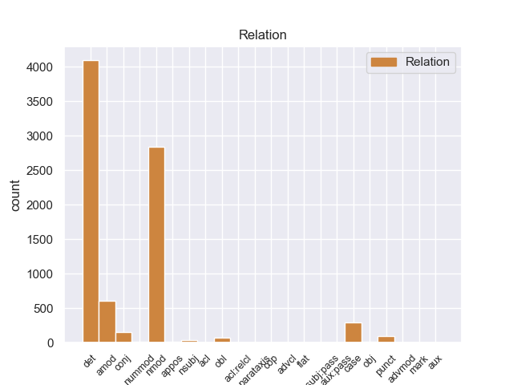
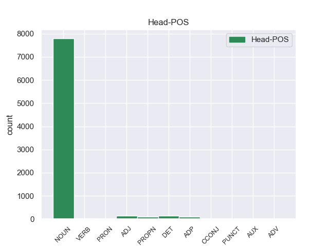
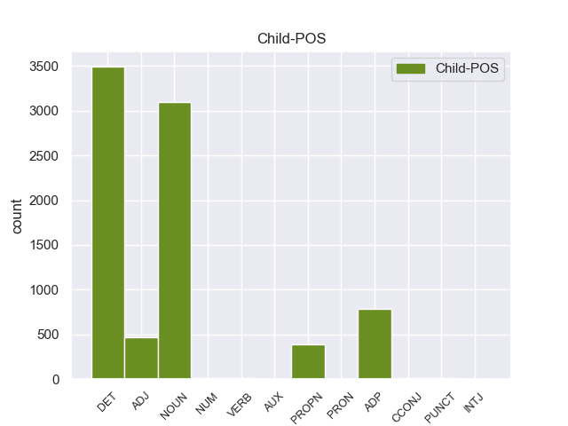

Distribution of features within this leaf



Agreement Rules sorted by frequency.
- When the dependent token is the determiner(det) of the head token, and the dependent token is DET.
1 De _ _ _ _ 0 _ _ _
2 la _ _ _ _ 0 _ _ _
3 Vega _ _ _ _ 0 _ _ _
4 ha _ _ _ _ 0 _ _ _
5 pedido _ _ _ _ 0 _ _ _
6 respetar _ _ _ _ 0 _ _ _
7 los _ _ _ _ 0 _ _ _
8 tiempos _ _ _ _ 0 _ _ _
9 de _ _ _ _ 0 _ _ _
10 los _ _ _ _ 0 _ _ _
11 procesos _ _ _ _ 0 _ _ _
12 y _ _ _ _ 0 _ _ _
13 de _ _ _ _ 0 _ _ _
14 la _ _ _ _ 0 _ _ _
15 misma _ _ _ _ 0 _ _ _
16 manera _ _ _ _ 0 _ _ _
17 que _ _ _ _ 0 _ _ _
18 no _ _ _ _ 0 _ _ _
19 ha _ _ _ _ 0 _ _ _
20 querido _ _ _ _ 0 _ _ _
21 entrar _ _ _ _ 0 _ _ _
22 en _ _ _ _ 0 _ _ _
23 la la DET _ Definite=Def|Gender=Fem|Number=Sing|PronType=Art 44 det _ _
24 salida _ _ _ _ 0 _ _ _
25 de _ _ _ _ 0 _ _ _
26 Corbacho _ _ _ _ 0 _ _ _
27 , _ _ _ _ 0 _ _ _
28 tampoco _ _ _ _ 0 _ _ _
29 lo _ _ _ _ 0 _ _ _
30 ha _ _ _ _ 0 _ _ _
31 hecho _ _ _ _ 0 _ _ _
32 la _ _ _ _ 0 _ _ _
33 posible _ _ _ _ 0 _ _ _
34 salida _ _ _ _ 0 _ _ _
35 de _ _ _ _ 0 _ _ _
36 Trinidad _ _ _ _ 0 _ _ _
37 Jiménez _ _ _ _ 0 _ _ _
38 , _ _ _ _ 0 _ _ _
39 que _ _ _ _ 0 _ _ _
40 le _ _ _ _ 0 _ _ _
41 acompañaba _ _ _ _ 0 _ _ _
42 en _ _ _ _ 0 _ _ _
43 la _ _ _ _ 0 _ _ _
44 sala sala NOUN _ Gender=Fem|Number=Sing 0 _ _ _
45 de _ _ _ _ 0 _ _ _
46 prensa _ _ _ _ 0 _ _ _
47 . _ _ _ _ 0 _ _ _
1 A _ _ _ _ 0 _ _ _
2 continuación _ _ _ _ 0 _ _ _
3 , _ _ _ _ 0 _ _ _
4 sonarán _ _ _ _ 0 _ _ _
5 los _ _ _ _ 0 _ _ _
6 ritmos _ _ _ _ 0 _ _ _
7 más _ _ _ _ 0 _ _ _
8 intensos _ _ _ _ 0 _ _ _
9 de _ _ _ _ 0 _ _ _
10 los _ _ _ _ 0 _ _ _
11 llanos _ _ _ _ 0 _ _ _
12 interpretados _ _ _ _ 0 _ _ _
13 por _ _ _ _ 0 _ _ _
14 una _ _ _ _ 0 _ _ _
15 agrupación _ _ _ _ 0 _ _ _
16 que _ _ _ _ 0 _ _ _
17 romperá _ _ _ _ 0 _ _ _
18 esquemas _ _ _ _ 0 _ _ _
19 : _ _ _ _ 0 _ _ _
20 el _ _ _ _ 0 _ _ _
21 Ensamble _ _ _ _ 0 _ _ _
22 de _ _ _ _ 0 _ _ _
23 Arpas _ _ _ _ 0 _ _ _
24 de _ _ _ _ 0 _ _ _
25 la _ _ _ _ 0 _ _ _
26 Orquesta orquesta NOUN _ Gender=Fem|Number=Sing 0 _ _ _
27 de _ _ _ _ 0 _ _ _
28 Música _ _ _ _ 0 _ _ _
29 Popular _ _ _ _ 0 _ _ _
30 de _ _ _ _ 0 _ _ _
31 el _ _ _ _ 0 _ _ _
32 Estado _ _ _ _ 0 _ _ _
33 Guárico _ _ _ _ 0 _ _ _
34 , _ _ _ _ 0 _ _ _
35 integrado _ _ _ _ 0 _ _ _
36 por _ _ _ _ 0 _ _ _
37 14 _ _ _ _ 0 _ _ _
38 ejecutantes _ _ _ _ 0 _ _ _
39 , _ _ _ _ 0 _ _ _
40 todos _ _ _ _ 0 _ _ _
41 formados _ _ _ _ 0 _ _ _
42 por _ _ _ _ 0 _ _ _
43 El _ _ _ _ 0 _ _ _
44 Sistema _ _ _ _ 0 _ _ _
45 , _ _ _ _ 0 _ _ _
46 siendo _ _ _ _ 0 _ _ _
47 algunos _ _ _ _ 0 _ _ _
48 de _ _ _ _ 0 _ _ _
49 ellos _ _ _ _ 0 _ _ _
50 ganadores _ _ _ _ 0 _ _ _
51 de _ _ _ _ 0 _ _ _
52 el _ _ _ _ 0 _ _ _
53 reconocido _ _ _ _ 0 _ _ _
54 Festival _ _ _ _ 0 _ _ _
55 Internacional _ _ _ _ 0 _ _ _
56 de _ _ _ _ 0 _ _ _
57 Arpas _ _ _ _ 0 _ _ _
58 Infantil _ _ _ _ 0 _ _ _
59 y _ _ _ _ 0 _ _ _
60 Adultos _ _ _ _ 0 _ _ _
61 de _ _ _ _ 0 _ _ _
62 Villavicencio villavicencio NOUN _ Gender=Fem|Number=Sing 26 nmod _ _
63 , _ _ _ _ 0 _ _ _
64 Colombia _ _ _ _ 0 _ _ _
65 . _ _ _ _ 0 _ _ _
1 Hombres _ _ _ _ 0 _ _ _
2 , _ _ _ _ 0 _ _ _
3 mujeres _ _ _ _ 0 _ _ _
4 y _ _ _ _ 0 _ _ _
5 niños _ _ _ _ 0 _ _ _
6 llevan _ _ _ _ 0 _ _ _
7 la _ _ _ _ 0 _ _ _
8 parte parte NOUN _ Gender=Fem|Number=Sing 0 _ _ _
9 superior _ _ _ _ 0 _ _ _
10 de _ _ _ _ 0 _ _ _
11 la la ADP _ Definite=Def|Gender=Fem|Number=Sing|PronType=Art 8 det _ _
12 cabeza _ _ _ _ 0 _ _ _
13 completamente _ _ _ _ 0 _ _ _
14 rasurada _ _ _ _ 0 _ _ _
15 , _ _ _ _ 0 _ _ _
16 las _ _ _ _ 0 _ _ _
17 mujeres _ _ _ _ 0 _ _ _
18 dejan _ _ _ _ 0 _ _ _
19 caer _ _ _ _ 0 _ _ _
20 hacia _ _ _ _ 0 _ _ _
21 atrás _ _ _ _ 0 _ _ _
22 el _ _ _ _ 0 _ _ _
23 resto _ _ _ _ 0 _ _ _
24 de _ _ _ _ 0 _ _ _
25 el _ _ _ _ 0 _ _ _
26 cabello _ _ _ _ 0 _ _ _
27 , _ _ _ _ 0 _ _ _
28 mientras _ _ _ _ 0 _ _ _
29 los _ _ _ _ 0 _ _ _
30 hombres _ _ _ _ 0 _ _ _
31 se _ _ _ _ 0 _ _ _
32 hacen _ _ _ _ 0 _ _ _
33 un _ _ _ _ 0 _ _ _
34 moño _ _ _ _ 0 _ _ _
35 . _ _ _ _ 0 _ _ _
1 La _ _ _ _ 0 _ _ _
2 Diputación _ _ _ _ 0 _ _ _
3 de _ _ _ _ 0 _ _ _
4 Valencia _ _ _ _ 0 _ _ _
5 ha _ _ _ _ 0 _ _ _
6 decidido _ _ _ _ 0 _ _ _
7 dar _ _ _ _ 0 _ _ _
8 el _ _ _ _ 0 _ _ _
9 salto _ _ _ _ 0 _ _ _
10 a _ _ _ _ 0 _ _ _
11 las _ _ _ _ 0 _ _ _
12 redes _ _ _ _ 0 _ _ _
13 sociales _ _ _ _ 0 _ _ _
14 y _ _ _ _ 0 _ _ _
15 cuenta _ _ _ _ 0 _ _ _
16 , _ _ _ _ 0 _ _ _
17 a _ _ _ _ 0 _ _ _
18 partir _ _ _ _ 0 _ _ _
19 de _ _ _ _ 0 _ _ _
20 hoy _ _ _ _ 0 _ _ _
21 , _ _ _ _ 0 _ _ _
22 con _ _ _ _ 0 _ _ _
23 un _ _ _ _ 0 _ _ _
24 blog _ _ _ _ 0 _ _ _
25 y _ _ _ _ 0 _ _ _
26 un _ _ _ _ 0 _ _ _
27 perfil _ _ _ _ 0 _ _ _
28 propio _ _ _ _ 0 _ _ _
29 en _ _ _ _ 0 _ _ _
30 las _ _ _ _ 0 _ _ _
31 principales _ _ _ _ 0 _ _ _
32 redes _ _ _ _ 0 _ _ _
33 sociales _ _ _ _ 0 _ _ _
34 , _ _ _ _ 0 _ _ _
35 con _ _ _ _ 0 _ _ _
36 los _ _ _ _ 0 _ _ _
37 que _ _ _ _ 0 _ _ _
38 pretende _ _ _ _ 0 _ _ _
39 establecer _ _ _ _ 0 _ _ _
40 una _ _ _ _ 0 _ _ _
41 comunicación comunicación NOUN _ Gender=Fem|Number=Sing 0 _ _ _
42 directa directa NOUN _ Gender=Fem|Number=Sing 41 amod _ _
43 con _ _ _ _ 0 _ _ _
44 los _ _ _ _ 0 _ _ _
45 ciudadanos _ _ _ _ 0 _ _ _
46 . _ _ _ _ 0 _ _ _
1 El _ _ _ _ 0 _ _ _
2 producto _ _ _ _ 0 _ _ _
3 estrella _ _ _ _ 0 _ _ _
4 de _ _ _ _ 0 _ _ _
5 el _ _ _ _ 0 _ _ _
6 lujoso _ _ _ _ 0 _ _ _
7 Haikko _ _ _ _ 0 _ _ _
8 Spa _ _ _ _ 0 _ _ _
9 , _ _ _ _ 0 _ _ _
10 situado _ _ _ _ 0 _ _ _
11 en _ _ _ _ 0 _ _ _
12 la _ _ _ _ 0 _ _ _
13 localidad _ _ _ _ 0 _ _ _
14 de _ _ _ _ 0 _ _ _
15 Porvoo _ _ _ _ 0 _ _ _
16 , _ _ _ _ 0 _ _ _
17 es _ _ _ _ 0 _ _ _
18 la _ _ _ _ 0 _ _ _
19 terapia _ _ _ _ 0 _ _ _
20 Cryo cryo PROPN _ Gender=Masc|Number=Sing 25 nmod _ _
21 : _ _ _ _ 0 _ _ _
22 el _ _ _ _ 0 _ _ _
23 cuerpo _ _ _ _ 0 _ _ _
24 se _ _ _ _ 0 _ _ _
25 somete somete NOUN _ Gender=Masc|Number=Sing 0 _ _ _
26 durante _ _ _ _ 0 _ _ _
27 los _ _ _ _ 0 _ _ _
28 primeros _ _ _ _ 0 _ _ _
29 minutos _ _ _ _ 0 _ _ _
30 a _ _ _ _ 0 _ _ _
31 temperaturas _ _ _ _ 0 _ _ _
32 de _ _ _ _ 0 _ _ _
33 -- _ _ _ _ 0 _ _ _
34 30 _ _ _ _ 0 _ _ _
35 y _ _ _ _ 0 _ _ _
36 -- _ _ _ _ 0 _ _ _
37 60 _ _ _ _ 0 _ _ _
38 º _ _ _ _ 0 _ _ _
39 C _ _ _ _ 0 _ _ _
40 en _ _ _ _ 0 _ _ _
41 las _ _ _ _ 0 _ _ _
42 salas _ _ _ _ 0 _ _ _
43 aisladas _ _ _ _ 0 _ _ _
44 antes _ _ _ _ 0 _ _ _
45 de _ _ _ _ 0 _ _ _
46 exponer _ _ _ _ 0 _ _ _
47 se _ _ _ _ 0 _ _ _
48 a _ _ _ _ 0 _ _ _
49 el _ _ _ _ 0 _ _ _
50 tratamiento _ _ _ _ 0 _ _ _
51 de _ _ _ _ 0 _ _ _
52 frío _ _ _ _ 0 _ _ _
53 a _ _ _ _ 0 _ _ _
54 -110 _ _ _ _ 0 _ _ _
55 º _ _ _ _ 0 _ _ _
56 C. _ _ _ _ 0 _ _ _
57 Desde _ _ _ _ 0 _ _ _
58 la _ _ _ _ 0 _ _ _
59 primera _ _ _ _ 0 _ _ _
60 sesión _ _ _ _ 0 _ _ _
61 se _ _ _ _ 0 _ _ _
62 percibe _ _ _ _ 0 _ _ _
63 el _ _ _ _ 0 _ _ _
64 aporte _ _ _ _ 0 _ _ _
65 de _ _ _ _ 0 _ _ _
66 energía _ _ _ _ 0 _ _ _
67 resultado _ _ _ _ 0 _ _ _
68 de _ _ _ _ 0 _ _ _
69 la _ _ _ _ 0 _ _ _
70 reducción _ _ _ _ 0 _ _ _
71 de _ _ _ _ 0 _ _ _
72 tensión _ _ _ _ 0 _ _ _
73 muscular _ _ _ _ 0 _ _ _
74 y _ _ _ _ 0 _ _ _
75 el _ _ _ _ 0 _ _ _
76 alivio _ _ _ _ 0 _ _ _
77 de _ _ _ _ 0 _ _ _
78 dolores _ _ _ _ 0 _ _ _
79 y _ _ _ _ 0 _ _ _
80 enfermedades _ _ _ _ 0 _ _ _
81 . _ _ _ _ 0 _ _ _
1 Si _ _ _ _ 0 _ _ _
2 Lord _ _ _ _ 0 _ _ _
3 Robert _ _ _ _ 0 _ _ _
4 sufriera _ _ _ _ 0 _ _ _
5 una _ _ _ _ 0 _ _ _
6 muerte _ _ _ _ 0 _ _ _
7 prematura prematura ADJ _ Gender=Masc|Number=Sing 11 amod _ _
8 , _ _ _ _ 0 _ _ _
9 Harrold _ _ _ _ 0 _ _ _
10 se _ _ _ _ 0 _ _ _
11 convertiria convertiria NOUN _ Gender=Masc|Number=Sing 0 _ _ _
12 en _ _ _ _ 0 _ _ _
13 Señor _ _ _ _ 0 _ _ _
14 de _ _ _ _ 0 _ _ _
15 el _ _ _ _ 0 _ _ _
16 Nido _ _ _ _ 0 _ _ _
17 de _ _ _ _ 0 _ _ _
18 Aguilas _ _ _ _ 0 _ _ _
19 y _ _ _ _ 0 _ _ _
20 el _ _ _ _ 0 _ _ _
21 Valle _ _ _ _ 0 _ _ _
22 de _ _ _ _ 0 _ _ _
23 Arryn _ _ _ _ 0 _ _ _
24 . _ _ _ _ 0 _ _ _
1 Igualmente _ _ _ _ 0 _ _ _
2 , _ _ _ _ 0 _ _ _
3 la _ _ _ _ 0 _ _ _
4 presencia _ _ _ _ 0 _ _ _
5 de _ _ _ _ 0 _ _ _
6 Ledesma _ _ _ _ 0 _ _ _
7 está _ _ _ _ 0 _ _ _
8 supeditada _ _ _ _ 0 _ _ _
9 a _ _ _ _ 0 _ _ _
10 la _ _ _ _ 0 _ _ _
11 actuación actuación NOUN _ Gender=Fem|Number=Sing 0 _ _ _
12 de _ _ _ _ 0 _ _ _
13 el _ _ _ _ 0 _ _ _
14 seleccionado _ _ _ _ 0 _ _ _
15 argentino _ _ _ _ 0 _ _ _
16 sub _ _ _ _ 0 _ _ _
17 20 _ _ _ _ 0 _ _ _
18 en _ _ _ _ 0 _ _ _
19 los _ _ _ _ 0 _ _ _
20 Panamericanos _ _ _ _ 0 _ _ _
21 , _ _ _ _ 0 _ _ _
22 ya _ _ _ _ 0 _ _ _
23 que _ _ _ _ 0 _ _ _
24 Cirigliano _ _ _ _ 0 _ _ _
25 sólo _ _ _ _ 0 _ _ _
26 estaría _ _ _ _ 0 _ _ _
27 en _ _ _ _ 0 _ _ _
28 condiciones _ _ _ _ 0 _ _ _
29 de _ _ _ _ 0 _ _ _
30 jugar _ _ _ _ 0 _ _ _
31 ante _ _ _ _ 0 _ _ _
32 Aldosivi _ _ _ _ 0 _ _ _
33 en _ _ _ _ 0 _ _ _
34 caso _ _ _ _ 0 _ _ _
35 de _ _ _ _ 0 _ _ _
36 que _ _ _ _ 0 _ _ _
37 el _ _ _ _ 0 _ _ _
38 elenco _ _ _ _ 0 _ _ _
39 " _ _ _ _ 0 _ _ _
40 albiceleste albiceleste ADJ _ Gender=Fem|Number=Sing 11 nmod _ _
41 " _ _ _ _ 0 _ _ _
42 no _ _ _ _ 0 _ _ _
43 supere _ _ _ _ 0 _ _ _
44 la _ _ _ _ 0 _ _ _
45 primera _ _ _ _ 0 _ _ _
46 ronda _ _ _ _ 0 _ _ _
47 , _ _ _ _ 0 _ _ _
48 algo _ _ _ _ 0 _ _ _
49 poco _ _ _ _ 0 _ _ _
50 probable _ _ _ _ 0 _ _ _
51 . _ _ _ _ 0 _ _ _
1 La _ _ _ _ 0 _ _ _
2 Organización organización NOUN _ Gender=Masc|Number=Sing 9 case _ _
3 Musical _ _ _ _ 0 _ _ _
4 Quintero _ _ _ _ 0 _ _ _
5 Clásico _ _ _ _ 0 _ _ _
6 , _ _ _ _ 0 _ _ _
7 es _ _ _ _ 0 _ _ _
8 una _ _ _ _ 0 _ _ _
9 Organización organización NOUN _ Gender=Masc|Number=Sing 0 _ _ _
10 especializada _ _ _ _ 0 _ _ _
11 en _ _ _ _ 0 _ _ _
12 conciertos _ _ _ _ 0 _ _ _
13 de _ _ _ _ 0 _ _ _
14 cámara _ _ _ _ 0 _ _ _
15 y _ _ _ _ 0 _ _ _
16 representación _ _ _ _ 0 _ _ _
17 de _ _ _ _ 0 _ _ _
18 diferentes _ _ _ _ 0 _ _ _
19 agrupaciones _ _ _ _ 0 _ _ _
20 camerísticas _ _ _ _ 0 _ _ _
21 únicas _ _ _ _ 0 _ _ _
22 de _ _ _ _ 0 _ _ _
23 su _ _ _ _ 0 _ _ _
24 género _ _ _ _ 0 _ _ _
25 en _ _ _ _ 0 _ _ _
26 Colombia _ _ _ _ 0 _ _ _
27 , _ _ _ _ 0 _ _ _
28 como _ _ _ _ 0 _ _ _
29 la _ _ _ _ 0 _ _ _
30 Orquesta _ _ _ _ 0 _ _ _
31 de _ _ _ _ 0 _ _ _
32 Cámara _ _ _ _ 0 _ _ _
33 COLOMBOEUROPEA _ _ _ _ 0 _ _ _
34 , _ _ _ _ 0 _ _ _
35 el _ _ _ _ 0 _ _ _
36 CONJUNTO _ _ _ _ 0 _ _ _
37 CLÁSICO _ _ _ _ 0 _ _ _
38 ROMÁNTICO _ _ _ _ 0 _ _ _
39 , _ _ _ _ 0 _ _ _
40 Conjunto _ _ _ _ 0 _ _ _
41 de _ _ _ _ 0 _ _ _
42 Música _ _ _ _ 0 _ _ _
43 Antigua _ _ _ _ 0 _ _ _
44 HEMIOLA _ _ _ _ 0 _ _ _
45 y _ _ _ _ 0 _ _ _
46 a _ _ _ _ 0 _ _ _
47 la _ _ _ _ 0 _ _ _
48 prestigiosa _ _ _ _ 0 _ _ _
49 Coral _ _ _ _ 0 _ _ _
50 REGINA _ _ _ _ 0 _ _ _
51 MARÍA _ _ _ _ 0 _ _ _
52 . _ _ _ _ 0 _ _ _
1 En _ _ _ _ 0 _ _ _
2 este _ _ _ _ 0 _ _ _
3 poemario _ _ _ _ 0 _ _ _
4 místico _ _ _ _ 0 _ _ _
5 y _ _ _ _ 0 _ _ _
6 nocturno nocturno NOUN _ Gender=Masc|Number=Sing 30 conj _ _
7 se _ _ _ _ 0 _ _ _
8 canta _ _ _ _ 0 _ _ _
9 a _ _ _ _ 0 _ _ _
10 la _ _ _ _ 0 _ _ _
11 muerte _ _ _ _ 0 _ _ _
12 y _ _ _ _ 0 _ _ _
13 se _ _ _ _ 0 _ _ _
14 identifica _ _ _ _ 0 _ _ _
15 a _ _ _ _ 0 _ _ _
16 la _ _ _ _ 0 _ _ _
17 amada _ _ _ _ 0 _ _ _
18 con _ _ _ _ 0 _ _ _
19 los _ _ _ _ 0 _ _ _
20 misterios _ _ _ _ 0 _ _ _
21 de _ _ _ _ 0 _ _ _
22 el _ _ _ _ 0 _ _ _
23 cristianismo _ _ _ _ 0 _ _ _
24 , _ _ _ _ 0 _ _ _
25 y _ _ _ _ 0 _ _ _
26 el _ _ _ _ 0 _ _ _
27 misticismo _ _ _ _ 0 _ _ _
28 de _ _ _ _ 0 _ _ _
29 el _ _ _ _ 0 _ _ _
30 viaje viaje NOUN _ Gender=Masc|Number=Sing 0 _ _ _
31 de _ _ _ _ 0 _ _ _
32 la _ _ _ _ 0 _ _ _
33 prometida _ _ _ _ 0 _ _ _
34 muerta _ _ _ _ 0 _ _ _
35 por _ _ _ _ 0 _ _ _
36 las _ _ _ _ 0 _ _ _
37 regiones _ _ _ _ 0 _ _ _
38 de _ _ _ _ 0 _ _ _
39 la _ _ _ _ 0 _ _ _
40 oscuridad _ _ _ _ 0 _ _ _
41 se _ _ _ _ 0 _ _ _
42 hace _ _ _ _ 0 _ _ _
43 patente _ _ _ _ 0 _ _ _
44 a _ _ _ _ 0 _ _ _
45 el _ _ _ _ 0 _ _ _
46 fundir _ _ _ _ 0 _ _ _
47 la _ _ _ _ 0 _ _ _
48 persona _ _ _ _ 0 _ _ _
49 de _ _ _ _ 0 _ _ _
50 la _ _ _ _ 0 _ _ _
51 amada _ _ _ _ 0 _ _ _
52 con _ _ _ _ 0 _ _ _
53 las _ _ _ _ 0 _ _ _
54 personas _ _ _ _ 0 _ _ _
55 de _ _ _ _ 0 _ _ _
56 la _ _ _ _ 0 _ _ _
57 Trinidad _ _ _ _ 0 _ _ _
58 cristiana _ _ _ _ 0 _ _ _
59 . _ _ _ _ 0 _ _ _
1 El _ _ _ _ 0 _ _ _
2 municipio _ _ _ _ 0 _ _ _
3 de _ _ _ _ 0 _ _ _
4 Republic republic NOUN _ Gender=Masc|Number=Sing 0 _ _ _
5 ( _ _ _ _ 0 _ _ _
6 en _ _ _ _ 0 _ _ _
7 inglés _ _ _ _ 0 _ _ _
8 : _ _ _ _ 0 _ _ _
9 Republic republic PROPN _ Gender=Masc|Number=Sing 4 amod _ _
10 Township _ _ _ _ 0 _ _ _
11 ) _ _ _ _ 0 _ _ _
12 es _ _ _ _ 0 _ _ _
13 un _ _ _ _ 0 _ _ _
14 municipio _ _ _ _ 0 _ _ _
15 ubicado _ _ _ _ 0 _ _ _
16 en _ _ _ _ 0 _ _ _
17 el _ _ _ _ 0 _ _ _
18 condado _ _ _ _ 0 _ _ _
19 de _ _ _ _ 0 _ _ _
20 Marquette _ _ _ _ 0 _ _ _
21 en _ _ _ _ 0 _ _ _
22 el _ _ _ _ 0 _ _ _
23 estado _ _ _ _ 0 _ _ _
24 estadounidense _ _ _ _ 0 _ _ _
25 de _ _ _ _ 0 _ _ _
26 Míchigan _ _ _ _ 0 _ _ _
27 . _ _ _ _ 0 _ _ _
1 La _ _ _ _ 0 _ _ _
2 OTAN _ _ _ _ 0 _ _ _
3 llevó _ _ _ _ 0 _ _ _
4 a _ _ _ _ 0 _ _ _
5 cabo _ _ _ _ 0 _ _ _
6 el _ _ _ _ 0 _ _ _
7 viernes _ _ _ _ 0 _ _ _
8 por _ _ _ _ 0 _ _ _
9 la _ _ _ _ 0 _ _ _
10 noche _ _ _ _ 0 _ _ _
11 varias _ _ _ _ 0 _ _ _
12 incursiones _ _ _ _ 0 _ _ _
13 sobre _ _ _ _ 0 _ _ _
14 Trípoli _ _ _ _ 0 _ _ _
15 , _ _ _ _ 0 _ _ _
16 apuntando _ _ _ _ 0 _ _ _
17 en _ _ _ _ 0 _ _ _
18 particular _ _ _ _ 0 _ _ _
19 hacia _ _ _ _ 0 _ _ _
20 el _ _ _ _ 0 _ _ _
21 sector _ _ _ _ 0 _ _ _
22 donde _ _ _ _ 0 _ _ _
23 está _ _ _ _ 0 _ _ _
24 ubicada ubicada ADP _ Gender=Fem|Number=Sing 26 nmod _ _
25 la _ _ _ _ 0 _ _ _
26 residencia residencia NOUN _ Gender=Fem|Number=Sing 0 _ _ _
27 de _ _ _ _ 0 _ _ _
28 el _ _ _ _ 0 _ _ _
29 líder _ _ _ _ 0 _ _ _
30 libio _ _ _ _ 0 _ _ _
31 Muamar _ _ _ _ 0 _ _ _
32 Gadafi _ _ _ _ 0 _ _ _
33 , _ _ _ _ 0 _ _ _
34 cerca _ _ _ _ 0 _ _ _
35 de _ _ _ _ 0 _ _ _
36 el _ _ _ _ 0 _ _ _
37 centro _ _ _ _ 0 _ _ _
38 de _ _ _ _ 0 _ _ _
39 la _ _ _ _ 0 _ _ _
40 capital _ _ _ _ 0 _ _ _
41 . _ _ _ _ 0 _ _ _
1 Hi hi NOUN _ Gender=Masc|Number=Sing 10 det _ _
2 - _ _ _ _ 0 _ _ _
3 5 _ _ _ _ 0 _ _ _
4 que _ _ _ _ 0 _ _ _
5 se _ _ _ _ 0 _ _ _
6 conoce _ _ _ _ 0 _ _ _
7 como _ _ _ _ 0 _ _ _
8 un _ _ _ _ 0 _ _ _
9 " _ _ _ _ 0 _ _ _
10 grupo grupo NOUN _ Gender=Masc|Number=Sing 0 _ _ _
11 de _ _ _ _ 0 _ _ _
12 pop _ _ _ _ 0 _ _ _
13 " _ _ _ _ 0 _ _ _
14 de _ _ _ _ 0 _ _ _
15 la _ _ _ _ 0 _ _ _
16 música _ _ _ _ 0 _ _ _
17 infantil _ _ _ _ 0 _ _ _
18 en _ _ _ _ 0 _ _ _
19 el _ _ _ _ 0 _ _ _
20 país _ _ _ _ 0 _ _ _
21 . _ _ _ _ 0 _ _ _
1 El _ _ _ _ 0 _ _ _
2 municipio _ _ _ _ 0 _ _ _
3 de _ _ _ _ 0 _ _ _
4 Weston _ _ _ _ 0 _ _ _
5 ( _ _ _ _ 0 _ _ _
6 en _ _ _ _ 0 _ _ _
7 inglés _ _ _ _ 0 _ _ _
8 : _ _ _ _ 0 _ _ _
9 Weston weston PROPN _ Gender=Masc|Number=Sing 0 _ _ _
10 Township township NOUN _ Gender=Masc|Number=Sing 9 punct _ _
11 ) _ _ _ _ 0 _ _ _
12 es _ _ _ _ 0 _ _ _
13 un _ _ _ _ 0 _ _ _
14 municipio _ _ _ _ 0 _ _ _
15 ubicado _ _ _ _ 0 _ _ _
16 en _ _ _ _ 0 _ _ _
17 el _ _ _ _ 0 _ _ _
18 condado _ _ _ _ 0 _ _ _
19 de _ _ _ _ 0 _ _ _
20 Platte _ _ _ _ 0 _ _ _
21 en _ _ _ _ 0 _ _ _
22 el _ _ _ _ 0 _ _ _
23 estado _ _ _ _ 0 _ _ _
24 estadounidense _ _ _ _ 0 _ _ _
25 de _ _ _ _ 0 _ _ _
26 Misuri _ _ _ _ 0 _ _ _
27 . _ _ _ _ 0 _ _ _
1 El _ _ _ _ 0 _ _ _
2 principal _ _ _ _ 0 _ _ _
3 sospechoso _ _ _ _ 0 _ _ _
4 en _ _ _ _ 0 _ _ _
5 el _ _ _ _ 0 _ _ _
6 caso _ _ _ _ 0 _ _ _
7 , _ _ _ _ 0 _ _ _
8 descrito _ _ _ _ 0 _ _ _
9 como _ _ _ _ 0 _ _ _
10 un _ _ _ _ 0 _ _ _
11 fanático _ _ _ _ 0 _ _ _
12 de _ _ _ _ 0 _ _ _
13 CSI _ _ _ _ 0 _ _ _
14 , _ _ _ _ 0 _ _ _
15 asesinó _ _ _ _ 0 _ _ _
16 a _ _ _ _ 0 _ _ _
17 su _ _ _ _ 0 _ _ _
18 madre _ _ _ _ 0 _ _ _
19 y _ _ _ _ 0 _ _ _
20 a _ _ _ _ 0 _ _ _
21 su _ _ _ _ 0 _ _ _
22 hija _ _ _ _ 0 _ _ _
23 , _ _ _ _ 0 _ _ _
24 luego _ _ _ _ 0 _ _ _
25 , _ _ _ _ 0 _ _ _
26 utilizó utilizó NOUN _ Gender=Masc|Number=Sing 0 _ _ _
27 cloro _ _ _ _ 0 _ _ _
28 para _ _ _ _ 0 _ _ _
29 lavar _ _ _ _ 0 _ _ _
30 sus _ _ _ _ 0 _ _ _
31 manos _ _ _ _ 0 _ _ _
32 llenas _ _ _ _ 0 _ _ _
33 de _ _ _ _ 0 _ _ _
34 sangre _ _ _ _ 0 _ _ _
35 y _ _ _ _ 0 _ _ _
36 cubrió _ _ _ _ 0 _ _ _
37 el _ _ _ _ 0 _ _ _
38 interior _ _ _ _ 0 _ _ _
39 de _ _ _ _ 0 _ _ _
40 su _ _ _ _ 0 _ _ _
41 auto _ _ _ _ 0 _ _ _
42 con _ _ _ _ 0 _ _ _
43 mantas _ _ _ _ 0 _ _ _
44 para _ _ _ _ 0 _ _ _
45 evitar _ _ _ _ 0 _ _ _
46 transferencias _ _ _ _ 0 _ _ _
47 en _ _ _ _ 0 _ _ _
48 el _ _ _ _ 0 _ _ _
49 transporte _ _ _ _ 0 _ _ _
50 de _ _ _ _ 0 _ _ _
51 los _ _ _ _ 0 _ _ _
52 cadáveres _ _ _ _ 0 _ _ _
53 , _ _ _ _ 0 _ _ _
54 que _ _ _ _ 0 _ _ _
55 luego _ _ _ _ 0 _ _ _
56 quemó _ _ _ _ 0 _ _ _
57 junto _ _ _ _ 0 _ _ _
58 con _ _ _ _ 0 _ _ _
59 su _ _ _ _ 0 _ _ _
60 ropa _ _ _ _ 0 _ _ _
61 y _ _ _ _ 0 _ _ _
62 colillas _ _ _ _ 0 _ _ _
63 de _ _ _ _ 0 _ _ _
64 cigarros _ _ _ _ 0 _ _ _
65 ( _ _ _ _ 0 _ _ _
66 temía _ _ _ _ 0 _ _ _
67 que _ _ _ _ 0 _ _ _
68 lo _ _ _ _ 0 _ _ _
69 descubrieran _ _ _ _ 0 _ _ _
70 por _ _ _ _ 0 _ _ _
71 su _ _ _ _ 0 _ _ _
72 ADN adn NOUN _ Gender=Masc|Number=Sing 26 obl _ _
73 en _ _ _ _ 0 _ _ _
74 ellos _ _ _ _ 0 _ _ _
75 ) _ _ _ _ 0 _ _ _
76 . _ _ _ _ 0 _ _ _
1 « _ _ _ _ 0 _ _ _
2 Walk _ _ _ _ 0 _ _ _
3 On _ _ _ _ 0 _ _ _
4 The _ _ _ _ 0 _ _ _
5 Water _ _ _ _ 0 _ _ _
6 » _ _ _ _ 0 _ _ _
7 - _ _ _ _ 0 _ _ _
8 en _ _ _ _ 0 _ _ _
9 español _ _ _ _ 0 _ _ _
10 : _ _ _ _ 0 _ _ _
11 « _ _ _ _ 0 _ _ _
12 Caminar _ _ _ _ 0 _ _ _
13 sobre _ _ _ _ 0 _ _ _
14 el _ _ _ _ 0 _ _ _
15 agua _ _ _ _ 0 _ _ _
16 » _ _ _ _ 0 _ _ _
17 -- _ _ _ _ 0 _ _ _
18 es _ _ _ _ 0 _ _ _
19 una _ _ _ _ 0 _ _ _
20 canción canción NOUN _ Gender=Fem|Number=Sing 0 _ _ _
21 , _ _ _ _ 0 _ _ _
22 segundo _ _ _ _ 0 _ _ _
23 sencillo _ _ _ _ 0 _ _ _
24 de _ _ _ _ 0 _ _ _
25 el _ _ _ _ 0 _ _ _
26 álbum _ _ _ _ 0 _ _ _
27 The _ _ _ _ 0 _ _ _
28 Lost los DET _ Gender=Fem|Number=Sing 20 nmod _ _
29 Get _ _ _ _ 0 _ _ _
30 Found _ _ _ _ 0 _ _ _
31 de _ _ _ _ 0 _ _ _
32 la _ _ _ _ 0 _ _ _
33 cantante _ _ _ _ 0 _ _ _
34 cristiana _ _ _ _ 0 _ _ _
35 Britt _ _ _ _ 0 _ _ _
36 Nicole _ _ _ _ 0 _ _ _
37 . _ _ _ _ 0 _ _ _
1 El _ _ _ _ 0 _ _ _
2 actual _ _ _ _ 0 _ _ _
3 escudo _ _ _ _ 0 _ _ _
4 está _ _ _ _ 0 _ _ _
5 formado formado DET _ Gender=Masc|Number=Sing 0 _ _ _
6 por _ _ _ _ 0 _ _ _
7 dos _ _ _ _ 0 _ _ _
8 círculos _ _ _ _ 0 _ _ _
9 concéntricos concéntricos ADP _ Gender=Masc|Number=Sing 5 case _ _
10 con _ _ _ _ 0 _ _ _
11 la _ _ _ _ 0 _ _ _
12 leyenda _ _ _ _ 0 _ _ _
13 GIRONA _ _ _ _ 0 _ _ _
14 FC _ _ _ _ 0 _ _ _
15 en _ _ _ _ 0 _ _ _
16 blanco _ _ _ _ 0 _ _ _
17 sobre _ _ _ _ 0 _ _ _
18 fondo _ _ _ _ 0 _ _ _
19 rojo _ _ _ _ 0 _ _ _
20 , _ _ _ _ 0 _ _ _
21 el _ _ _ _ 0 _ _ _
22 círculo _ _ _ _ 0 _ _ _
23 interior _ _ _ _ 0 _ _ _
24 esta _ _ _ _ 0 _ _ _
25 cruzado _ _ _ _ 0 _ _ _
26 por _ _ _ _ 0 _ _ _
27 19 _ _ _ _ 0 _ _ _
28 franjas _ _ _ _ 0 _ _ _
29 , _ _ _ _ 0 _ _ _
30 10 _ _ _ _ 0 _ _ _
31 blancas _ _ _ _ 0 _ _ _
32 y _ _ _ _ 0 _ _ _
33 9 _ _ _ _ 0 _ _ _
34 rojas _ _ _ _ 0 _ _ _
35 portando _ _ _ _ 0 _ _ _
36 un _ _ _ _ 0 _ _ _
37 blasón _ _ _ _ 0 _ _ _
38 lonsanjado _ _ _ _ 0 _ _ _
39 de _ _ _ _ 0 _ _ _
40 oro _ _ _ _ 0 _ _ _
41 con _ _ _ _ 0 _ _ _
42 cuatro _ _ _ _ 0 _ _ _
43 palos _ _ _ _ 0 _ _ _
44 verticales _ _ _ _ 0 _ _ _
45 gules _ _ _ _ 0 _ _ _
46 y _ _ _ _ 0 _ _ _
47 escusón _ _ _ _ 0 _ _ _
48 central _ _ _ _ 0 _ _ _
49 cuadrilongo _ _ _ _ 0 _ _ _
50 ibérico _ _ _ _ 0 _ _ _
51 verado _ _ _ _ 0 _ _ _
52 de _ _ _ _ 0 _ _ _
53 ondas _ _ _ _ 0 _ _ _
54 rojas _ _ _ _ 0 _ _ _
55 y _ _ _ _ 0 _ _ _
56 blancas _ _ _ _ 0 _ _ _
57 . _ _ _ _ 0 _ _ _
1 " _ _ _ _ 0 _ _ _
2 Keep keep DET _ Gender=Masc|Number=Sing 0 _ _ _
3 Hope _ _ _ _ 0 _ _ _
4 Alive alive ADJ _ Gender=Masc|Number=Sing 2 case _ _
5 " _ _ _ _ 0 _ _ _
6 pronto _ _ _ _ 0 _ _ _
7 se _ _ _ _ 0 _ _ _
8 hizo _ _ _ _ 0 _ _ _
9 The _ _ _ _ 0 _ _ _
10 Crystal _ _ _ _ 0 _ _ _
11 Method _ _ _ _ 0 _ _ _
12 más _ _ _ _ 0 _ _ _
13 populares _ _ _ _ 0 _ _ _
14 . _ _ _ _ 0 _ _ _
1 Ellsworth ellsworth PROPN _ Definite=Def|Gender=Masc|Number=Sing|PronType=Art 23 case _ _
2 Milton _ _ _ _ 0 _ _ _
3 Statler _ _ _ _ 0 _ _ _
4 ( _ _ _ _ 0 _ _ _
5 26 _ _ _ _ 0 _ _ _
6 de _ _ _ _ 0 _ _ _
7 octubre _ _ _ _ 0 _ _ _
8 1863 _ _ _ _ 0 _ _ _
9 a _ _ _ _ 0 _ _ _
10 16 _ _ _ _ 0 _ _ _
11 de _ _ _ _ 0 _ _ _
12 abril _ _ _ _ 0 _ _ _
13 1928 _ _ _ _ 0 _ _ _
14 ) _ _ _ _ 0 _ _ _
15 fue _ _ _ _ 0 _ _ _
16 un _ _ _ _ 0 _ _ _
17 empresario _ _ _ _ 0 _ _ _
18 hotelero _ _ _ _ 0 _ _ _
19 estadounidense _ _ _ _ 0 _ _ _
20 nacido _ _ _ _ 0 _ _ _
21 cerca _ _ _ _ 0 _ _ _
22 de _ _ _ _ 0 _ _ _
23 Gettysburg gettysburg PROPN _ Gender=Masc|Number=Sing 0 _ _ _
24 , _ _ _ _ 0 _ _ _
25 Pennsylvania _ _ _ _ 0 _ _ _
26 . _ _ _ _ 0 _ _ _
1 El _ _ _ _ 0 _ _ _
2 tubérculo _ _ _ _ 0 _ _ _
3 para _ _ _ _ 0 _ _ _
4 preparar _ _ _ _ 0 _ _ _
5 la _ _ _ _ 0 _ _ _
6 harina _ _ _ _ 0 _ _ _
7 debe _ _ _ _ 0 _ _ _
8 ser _ _ _ _ 0 _ _ _
9 recolectado recolectado ADJ _ Definite=Def|Gender=Fem|Number=Sing|PronType=Art 0 _ _ _
10 cuando _ _ _ _ 0 _ _ _
11 la _ _ _ _ 0 _ _ _
12 planta planta NOUN _ Gender=Fem|Number=Sing 9 nsubj _ _
13 está _ _ _ _ 0 _ _ _
14 recién _ _ _ _ 0 _ _ _
15 seca _ _ _ _ 0 _ _ _
16 después _ _ _ _ 0 _ _ _
17 de _ _ _ _ 0 _ _ _
18 la _ _ _ _ 0 _ _ _
19 floración _ _ _ _ 0 _ _ _
20 y _ _ _ _ 0 _ _ _
21 cuando _ _ _ _ 0 _ _ _
22 ha _ _ _ _ 0 _ _ _
23 soltado _ _ _ _ 0 _ _ _
24 las _ _ _ _ 0 _ _ _
25 semillas _ _ _ _ 0 _ _ _
26 . _ _ _ _ 0 _ _ _
1 La _ _ _ _ 0 _ _ _
2 Real real ADP _ Gender=Masc|Number=Sing 0 _ _ _
3 Cofradía _ _ _ _ 0 _ _ _
4 de _ _ _ _ 0 _ _ _
5 Nuestro _ _ _ _ 0 _ _ _
6 Padre _ _ _ _ 0 _ _ _
7 Jesús _ _ _ _ 0 _ _ _
8 Nazareno nazareno DET _ Gender=Masc|Number=Sing 2 case _ _
9 , _ _ _ _ 0 _ _ _
10 Las _ _ _ _ 0 _ _ _
11 Cruces _ _ _ _ 0 _ _ _
12 y _ _ _ _ 0 _ _ _
13 Santísima _ _ _ _ 0 _ _ _
14 Virgen _ _ _ _ 0 _ _ _
15 del _ _ _ _ 0 _ _ _
16 Rosario _ _ _ _ 0 _ _ _
17 es _ _ _ _ 0 _ _ _
18 una _ _ _ _ 0 _ _ _
19 Cofradía _ _ _ _ 0 _ _ _
20 Penitenciaria _ _ _ _ 0 _ _ _
21 de _ _ _ _ 0 _ _ _
22 Semana _ _ _ _ 0 _ _ _
23 Santa _ _ _ _ 0 _ _ _
24 erigida _ _ _ _ 0 _ _ _
25 canónicamente _ _ _ _ 0 _ _ _
26 en _ _ _ _ 0 _ _ _
27 la _ _ _ _ 0 _ _ _
28 Parroquial _ _ _ _ 0 _ _ _
29 de _ _ _ _ 0 _ _ _
30 Santa _ _ _ _ 0 _ _ _
31 María _ _ _ _ 0 _ _ _
32 de _ _ _ _ 0 _ _ _
33 el _ _ _ _ 0 _ _ _
34 Salvador _ _ _ _ 0 _ _ _
35 de _ _ _ _ 0 _ _ _
36 la _ _ _ _ 0 _ _ _
37 ciudad _ _ _ _ 0 _ _ _
38 de _ _ _ _ 0 _ _ _
39 Chinchilla _ _ _ _ 0 _ _ _
40 de _ _ _ _ 0 _ _ _
41 Montearagón _ _ _ _ 0 _ _ _
42 , _ _ _ _ 0 _ _ _
43 en _ _ _ _ 0 _ _ _
44 la _ _ _ _ 0 _ _ _
45 Diócesis _ _ _ _ 0 _ _ _
46 de _ _ _ _ 0 _ _ _
47 Albacete _ _ _ _ 0 _ _ _
48 . _ _ _ _ 0 _ _ _
1 Doggystyle _ _ _ _ 0 _ _ _
2 es _ _ _ _ 0 _ _ _
3 el _ _ _ _ 0 _ _ _
4 álbum álbum NOUN _ Gender=Masc|Number=Sing 0 _ _ _
5 debut debut ADP _ Gender=Masc|Number=Sing 4 amod _ _
6 de _ _ _ _ 0 _ _ _
7 el _ _ _ _ 0 _ _ _
8 rapero _ _ _ _ 0 _ _ _
9 Snoop _ _ _ _ 0 _ _ _
10 Doggy _ _ _ _ 0 _ _ _
11 Dogg _ _ _ _ 0 _ _ _
12 , _ _ _ _ 0 _ _ _
13 lanzado _ _ _ _ 0 _ _ _
14 el _ _ _ _ 0 _ _ _
15 23 _ _ _ _ 0 _ _ _
16 de _ _ _ _ 0 _ _ _
17 noviembre _ _ _ _ 0 _ _ _
18 de _ _ _ _ 0 _ _ _
19 1993 _ _ _ _ 0 _ _ _
20 . _ _ _ _ 0 _ _ _
1 Sirva _ _ _ _ 0 _ _ _
2 la _ _ _ _ 0 _ _ _
3 presente _ _ _ _ 0 _ _ _
4 para _ _ _ _ 0 _ _ _
5 saludar _ _ _ _ 0 _ _ _
6 le _ _ _ _ 0 _ _ _
7 de _ _ _ _ 0 _ _ _
8 parte _ _ _ _ 0 _ _ _
9 de _ _ _ _ 0 _ _ _
10 el _ _ _ _ 0 _ _ _
11 Alcalde _ _ _ _ 0 _ _ _
12 de _ _ _ _ 0 _ _ _
13 el _ _ _ _ 0 _ _ _
14 Municipio _ _ _ _ 0 _ _ _
15 Heres _ _ _ _ 0 _ _ _
16 y _ _ _ _ 0 _ _ _
17 su _ _ _ _ 0 _ _ _
18 Equipo _ _ _ _ 0 _ _ _
19 de _ _ _ _ 0 _ _ _
20 Turismo _ _ _ _ 0 _ _ _
21 e _ _ _ _ 0 _ _ _
22 informar _ _ _ _ 0 _ _ _
23 le _ _ _ _ 0 _ _ _
24 que _ _ _ _ 0 _ _ _
25 el _ _ _ _ 0 _ _ _
26 20 _ _ _ _ 0 _ _ _
27 de _ _ _ _ 0 _ _ _
28 mayo _ _ _ _ 0 _ _ _
29 de _ _ _ _ 0 _ _ _
30 el _ _ _ _ 0 _ _ _
31 año _ _ _ _ 0 _ _ _
32 en _ _ _ _ 0 _ _ _
33 curso _ _ _ _ 0 _ _ _
34 , _ _ _ _ 0 _ _ _
35 en _ _ _ _ 0 _ _ _
36 el _ _ _ _ 0 _ _ _
37 marco _ _ _ _ 0 _ _ _
38 de _ _ _ _ 0 _ _ _
39 la _ _ _ _ 0 _ _ _
40 celebración _ _ _ _ 0 _ _ _
41 de _ _ _ _ 0 _ _ _
42 los _ _ _ _ 0 _ _ _
43 246 _ _ _ _ 0 _ _ _
44 aniversarios _ _ _ _ 0 _ _ _
45 de _ _ _ _ 0 _ _ _
46 Ciudad _ _ _ _ 0 _ _ _
47 Bolívar _ _ _ _ 0 _ _ _
48 , _ _ _ _ 0 _ _ _
49 la _ _ _ _ 0 _ _ _
50 Alcaldía _ _ _ _ 0 _ _ _
51 de _ _ _ _ 0 _ _ _
52 el _ _ _ _ 0 _ _ _
53 Municipio _ _ _ _ 0 _ _ _
54 Heres _ _ _ _ 0 _ _ _
55 , _ _ _ _ 0 _ _ _
56 a _ _ _ _ 0 _ _ _
57 través _ _ _ _ 0 _ _ _
58 de _ _ _ _ 0 _ _ _
59 su _ _ _ _ 0 _ _ _
60 Dirección _ _ _ _ 0 _ _ _
61 de _ _ _ _ 0 _ _ _
62 Turismo _ _ _ _ 0 _ _ _
63 ha _ _ _ _ 0 _ _ _
64 programado _ _ _ _ 0 _ _ _
65 las _ _ _ _ 0 _ _ _
66 1ras _ _ _ _ 0 _ _ _
67 jornadas _ _ _ _ 0 _ _ _
68 sobre _ _ _ _ 0 _ _ _
69 perspectivas _ _ _ _ 0 _ _ _
70 de _ _ _ _ 0 _ _ _
71 desarrollo _ _ _ _ 0 _ _ _
72 para _ _ _ _ 0 _ _ _
73 el _ _ _ _ 0 _ _ _
74 turístico _ _ _ _ 0 _ _ _
75 sustentable _ _ _ _ 0 _ _ _
76 en _ _ _ _ 0 _ _ _
77 el _ _ _ _ 0 _ _ _
78 Municipio _ _ _ _ 0 _ _ _
79 Heres _ _ _ _ 0 _ _ _
80 , _ _ _ _ 0 _ _ _
81 que _ _ _ _ 0 _ _ _
82 contará _ _ _ _ 0 _ _ _
83 con _ _ _ _ 0 _ _ _
84 la _ _ _ _ 0 _ _ _
85 participación participación NOUN _ Gender=Fem|Number=Sing 0 _ _ _
86 de _ _ _ _ 0 _ _ _
87 representantes _ _ _ _ 0 _ _ _
88 de _ _ _ _ 0 _ _ _
89 los _ _ _ _ 0 _ _ _
90 poderes _ _ _ _ 0 _ _ _
91 públicos _ _ _ _ 0 _ _ _
92 locales _ _ _ _ 0 _ _ _
93 , _ _ _ _ 0 _ _ _
94 regionales _ _ _ _ 0 _ _ _
95 y _ _ _ _ 0 _ _ _
96 nacionales _ _ _ _ 0 _ _ _
97 , _ _ _ _ 0 _ _ _
98 así _ _ _ _ 0 _ _ _
99 como _ _ _ _ 0 _ _ _
100 destacados destacados DET _ Gender=Fem|Number=Sing 85 amod _ _
101 profesionales _ _ _ _ 0 _ _ _
102 , _ _ _ _ 0 _ _ _
103 académicos _ _ _ _ 0 _ _ _
104 , _ _ _ _ 0 _ _ _
105 coordinadores _ _ _ _ 0 _ _ _
106 de _ _ _ _ 0 _ _ _
107 turismos _ _ _ _ 0 _ _ _
108 de _ _ _ _ 0 _ _ _
109 las _ _ _ _ 0 _ _ _
110 diferentes _ _ _ _ 0 _ _ _
111 universidades _ _ _ _ 0 _ _ _
112 que _ _ _ _ 0 _ _ _
113 ofrecen _ _ _ _ 0 _ _ _
114 la _ _ _ _ 0 _ _ _
115 carrera _ _ _ _ 0 _ _ _
116 de _ _ _ _ 0 _ _ _
117 Turismo _ _ _ _ 0 _ _ _
118 en _ _ _ _ 0 _ _ _
119 la _ _ _ _ 0 _ _ _
120 región _ _ _ _ 0 _ _ _
121 , _ _ _ _ 0 _ _ _
122 estudiantes _ _ _ _ 0 _ _ _
123 universitarios _ _ _ _ 0 _ _ _
124 , _ _ _ _ 0 _ _ _
125 empresarios _ _ _ _ 0 _ _ _
126 turísticos _ _ _ _ 0 _ _ _
127 y _ _ _ _ 0 _ _ _
128 promotores _ _ _ _ 0 _ _ _
129 turísticos _ _ _ _ 0 _ _ _
130 de _ _ _ _ 0 _ _ _
131 el _ _ _ _ 0 _ _ _
132 Estado _ _ _ _ 0 _ _ _
133 Bolívar _ _ _ _ 0 _ _ _
134 . _ _ _ _ 0 _ _ _
1 Goatse.cx _ _ _ _ 0 _ _ _
2 o _ _ _ _ 0 _ _ _
3 Goatse.da.ru goatse.da.ru PROPN _ Gender=Masc|Number=Sing 45 det _ _
4 ( _ _ _ _ 0 _ _ _
5 pronunciado _ _ _ _ 0 _ _ _
6 de _ _ _ _ 0 _ _ _
7 varias _ _ _ _ 0 _ _ _
8 maneras _ _ _ _ 0 _ _ _
9 en _ _ _ _ 0 _ _ _
10 inglés _ _ _ _ 0 _ _ _
11 : _ _ _ _ 0 _ _ _
12 " _ _ _ _ 0 _ _ _
13 goat _ _ _ _ 0 _ _ _
14 see _ _ _ _ 0 _ _ _
15 , _ _ _ _ 0 _ _ _
16 " _ _ _ _ 0 _ _ _
17 " _ _ _ _ 0 _ _ _
18 goat _ _ _ _ 0 _ _ _
19 seh _ _ _ _ 0 _ _ _
20 , _ _ _ _ 0 _ _ _
21 " _ _ _ _ 0 _ _ _
22 " _ _ _ _ 0 _ _ _
23 goats _ _ _ _ 0 _ _ _
24 , _ _ _ _ 0 _ _ _
25 " _ _ _ _ 0 _ _ _
26 " _ _ _ _ 0 _ _ _
27 goatsex _ _ _ _ 0 _ _ _
28 , _ _ _ _ 0 _ _ _
29 " _ _ _ _ 0 _ _ _
30 " _ _ _ _ 0 _ _ _
31 goat _ _ _ _ 0 _ _ _
32 say _ _ _ _ 0 _ _ _
33 " _ _ _ _ 0 _ _ _
34 , _ _ _ _ 0 _ _ _
35 o _ _ _ _ 0 _ _ _
36 " _ _ _ _ 0 _ _ _
37 goat _ _ _ _ 0 _ _ _
38 see _ _ _ _ 0 _ _ _
39 dot _ _ _ _ 0 _ _ _
40 cx _ _ _ _ 0 _ _ _
41 " _ _ _ _ 0 _ _ _
42 ) _ _ _ _ 0 _ _ _
43 fue _ _ _ _ 0 _ _ _
44 un _ _ _ _ 0 _ _ _
45 sitio sitio NOUN _ Gender=Masc|Number=Sing 0 _ _ _
46 de _ _ _ _ 0 _ _ _
47 Internet _ _ _ _ 0 _ _ _
48 de _ _ _ _ 0 _ _ _
49 el _ _ _ _ 0 _ _ _
50 tipo _ _ _ _ 0 _ _ _
51 " _ _ _ _ 0 _ _ _
52 Internet _ _ _ _ 0 _ _ _
53 shock _ _ _ _ 0 _ _ _
54 sites _ _ _ _ 0 _ _ _
55 " _ _ _ _ 0 _ _ _
56 que _ _ _ _ 0 _ _ _
57 durante _ _ _ _ 0 _ _ _
58 varios _ _ _ _ 0 _ _ _
59 años _ _ _ _ 0 _ _ _
60 , _ _ _ _ 0 _ _ _
61 desde _ _ _ _ 0 _ _ _
62 1999 _ _ _ _ 0 _ _ _
63 , _ _ _ _ 0 _ _ _
64 conmocionaron _ _ _ _ 0 _ _ _
65 a _ _ _ _ 0 _ _ _
66 la _ _ _ _ 0 _ _ _
67 comunidad _ _ _ _ 0 _ _ _
68 internauta _ _ _ _ 0 _ _ _
69 , _ _ _ _ 0 _ _ _
70 recibiendo _ _ _ _ 0 _ _ _
71 más _ _ _ _ 0 _ _ _
72 visitas _ _ _ _ 0 _ _ _
73 durante _ _ _ _ 0 _ _ _
74 el _ _ _ _ 0 _ _ _
75 año _ _ _ _ 0 _ _ _
76 2004 _ _ _ _ 0 _ _ _
77 . _ _ _ _ 0 _ _ _
1 Josef _ _ _ _ 0 _ _ _
2 Breuer _ _ _ _ 0 _ _ _
3 y _ _ _ _ 0 _ _ _
4 Sigmund _ _ _ _ 0 _ _ _
5 Freud _ _ _ _ 0 _ _ _
6 , _ _ _ _ 0 _ _ _
7 iniciadores _ _ _ _ 0 _ _ _
8 de _ _ _ _ 0 _ _ _
9 el _ _ _ _ 0 _ _ _
10 psicoanálisis _ _ _ _ 0 _ _ _
11 , _ _ _ _ 0 _ _ _
12 retomaron _ _ _ _ 0 _ _ _
13 este _ _ _ _ 0 _ _ _
14 concepto _ _ _ _ 0 _ _ _
15 en _ _ _ _ 0 _ _ _
16 sus _ _ _ _ 0 _ _ _
17 primeros _ _ _ _ 0 _ _ _
18 trabajos _ _ _ _ 0 _ _ _
19 , _ _ _ _ 0 _ _ _
20 y _ _ _ _ 0 _ _ _
21 denominaron _ _ _ _ 0 _ _ _
22 método método NOUN _ Gender=Masc|Number=Sing 61 obj _ _
23 catártico _ _ _ _ 0 _ _ _
24 a _ _ _ _ 0 _ _ _
25 la _ _ _ _ 0 _ _ _
26 expresión _ _ _ _ 0 _ _ _
27 o _ _ _ _ 0 _ _ _
28 remembranza _ _ _ _ 0 _ _ _
29 de _ _ _ _ 0 _ _ _
30 una _ _ _ _ 0 _ _ _
31 emoción _ _ _ _ 0 _ _ _
32 o _ _ _ _ 0 _ _ _
33 recuerdo _ _ _ _ 0 _ _ _
34 reprimido _ _ _ _ 0 _ _ _
35 durante _ _ _ _ 0 _ _ _
36 el _ _ _ _ 0 _ _ _
37 tratamiento _ _ _ _ 0 _ _ _
38 , _ _ _ _ 0 _ _ _
39 lo _ _ _ _ 0 _ _ _
40 que _ _ _ _ 0 _ _ _
41 generaría _ _ _ _ 0 _ _ _
42 un _ _ _ _ 0 _ _ _
43 " _ _ _ _ 0 _ _ _
44 desbloqueo _ _ _ _ 0 _ _ _
45 " _ _ _ _ 0 _ _ _
46 súbito _ _ _ _ 0 _ _ _
47 de _ _ _ _ 0 _ _ _
48 dicha _ _ _ _ 0 _ _ _
49 emoción _ _ _ _ 0 _ _ _
50 o _ _ _ _ 0 _ _ _
51 recuerdo _ _ _ _ 0 _ _ _
52 , _ _ _ _ 0 _ _ _
53 pero _ _ _ _ 0 _ _ _
54 con _ _ _ _ 0 _ _ _
55 un _ _ _ _ 0 _ _ _
56 impacto _ _ _ _ 0 _ _ _
57 duradero _ _ _ _ 0 _ _ _
58 ( _ _ _ _ 0 _ _ _
59 y _ _ _ _ 0 _ _ _
60 le _ _ _ _ 0 _ _ _
61 permitiría permitiría NOUN _ Gender=Masc|Number=Sing 0 _ _ _
62 luego _ _ _ _ 0 _ _ _
63 a _ _ _ _ 0 _ _ _
64 el _ _ _ _ 0 _ _ _
65 paciente _ _ _ _ 0 _ _ _
66 , _ _ _ _ 0 _ _ _
67 por _ _ _ _ 0 _ _ _
68 ejemplo _ _ _ _ 0 _ _ _
69 , _ _ _ _ 0 _ _ _
70 entender _ _ _ _ 0 _ _ _
71 mejor _ _ _ _ 0 _ _ _
72 dicha _ _ _ _ 0 _ _ _
73 emoción _ _ _ _ 0 _ _ _
74 o _ _ _ _ 0 _ _ _
75 evento _ _ _ _ 0 _ _ _
76 o _ _ _ _ 0 _ _ _
77 incluso _ _ _ _ 0 _ _ _
78 hablar _ _ _ _ 0 _ _ _
79 ampliamente _ _ _ _ 0 _ _ _
80 sobre _ _ _ _ 0 _ _ _
81 ello _ _ _ _ 0 _ _ _
82 ) _ _ _ _ 0 _ _ _
83 . _ _ _ _ 0 _ _ _
1 El _ _ _ _ 0 _ _ _
2 nombre _ _ _ _ 0 _ _ _
3 Atakapa _ _ _ _ 0 _ _ _
4 es _ _ _ _ 0 _ _ _
5 derivado _ _ _ _ 0 _ _ _
6 de _ _ _ _ 0 _ _ _
7 el _ _ _ _ 0 _ _ _
8 nombre _ _ _ _ 0 _ _ _
9 de _ _ _ _ 0 _ _ _
10 choctaw _ _ _ _ 0 _ _ _
11 Atakapa _ _ _ _ 0 _ _ _
12 que _ _ _ _ 0 _ _ _
13 significa _ _ _ _ 0 _ _ _
14 " _ _ _ _ 0 _ _ _
15 comedor comedor NOUN _ Gender=Masc|Number=Sing 0 _ _ _
16 de _ _ _ _ 0 _ _ _
17 personas _ _ _ _ 0 _ _ _
18 " _ _ _ _ 0 _ _ _
19 ( _ _ _ _ 0 _ _ _
20 " _ _ _ _ 0 _ _ _
21 persona _ _ _ _ 0 _ _ _
22 " _ _ _ _ 0 _ _ _
23 de _ _ _ _ 0 _ _ _
24 hattak hattak PROPN _ Gender=Masc|Number=Sing 15 conj _ _
25 , _ _ _ _ 0 _ _ _
26 apa _ _ _ _ 0 _ _ _
27 para _ _ _ _ 0 _ _ _
28 " _ _ _ _ 0 _ _ _
29 comer _ _ _ _ 0 _ _ _
30 " _ _ _ _ 0 _ _ _
31 ) _ _ _ _ 0 _ _ _
32 , _ _ _ _ 0 _ _ _
33 que _ _ _ _ 0 _ _ _
34 es _ _ _ _ 0 _ _ _
35 una _ _ _ _ 0 _ _ _
36 referencia _ _ _ _ 0 _ _ _
37 a _ _ _ _ 0 _ _ _
38 la _ _ _ _ 0 _ _ _
39 práctica _ _ _ _ 0 _ _ _
40 de _ _ _ _ 0 _ _ _
41 el _ _ _ _ 0 _ _ _
42 canibalismo _ _ _ _ 0 _ _ _
43 ejercitado _ _ _ _ 0 _ _ _
44 por _ _ _ _ 0 _ _ _
45 personas _ _ _ _ 0 _ _ _
46 de _ _ _ _ 0 _ _ _
47 costa _ _ _ _ 0 _ _ _
48 de _ _ _ _ 0 _ _ _
49 Golfo _ _ _ _ 0 _ _ _
50 en _ _ _ _ 0 _ _ _
51 sus _ _ _ _ 0 _ _ _
52 enemigos _ _ _ _ 0 _ _ _
53 . _ _ _ _ 0 _ _ _
1 Más _ _ _ _ 0 _ _ _
2 tarde _ _ _ _ 0 _ _ _
3 en _ _ _ _ 0 _ _ _
4 1960 _ _ _ _ 0 _ _ _
5 , _ _ _ _ 0 _ _ _
6 The the ADJ _ Gender=Masc|Number=Sing 7 det _ _
7 Boss boss ADJ _ Gender=Masc|Number=Sing 0 _ _ _
8 fue _ _ _ _ 0 _ _ _
9 enviada _ _ _ _ 0 _ _ _
10 a _ _ _ _ 0 _ _ _
11 el _ _ _ _ 0 _ _ _
12 espacio _ _ _ _ 0 _ _ _
13 en _ _ _ _ 0 _ _ _
14 una _ _ _ _ 0 _ _ _
15 misión _ _ _ _ 0 _ _ _
16 cuyo _ _ _ _ 0 _ _ _
17 propósito _ _ _ _ 0 _ _ _
18 era _ _ _ _ 0 _ _ _
19 estudiar _ _ _ _ 0 _ _ _
20 como _ _ _ _ 0 _ _ _
21 el _ _ _ _ 0 _ _ _
22 cuerpo _ _ _ _ 0 _ _ _
23 humano _ _ _ _ 0 _ _ _
24 se _ _ _ _ 0 _ _ _
25 adaptaba _ _ _ _ 0 _ _ _
26 a _ _ _ _ 0 _ _ _
27 las _ _ _ _ 0 _ _ _
28 condiciones _ _ _ _ 0 _ _ _
29 extremas _ _ _ _ 0 _ _ _
30 . _ _ _ _ 0 _ _ _
1 Los _ _ _ _ 0 _ _ _
2 griegos _ _ _ _ 0 _ _ _
3 de _ _ _ _ 0 _ _ _
4 Egipto _ _ _ _ 0 _ _ _
5 , _ _ _ _ 0 _ _ _
6 cuyo _ _ _ _ 0 _ _ _
7 número _ _ _ _ 0 _ _ _
8 era _ _ _ _ 0 _ _ _
9 de _ _ _ _ 0 _ _ _
10 apenas _ _ _ _ 0 _ _ _
11 una _ _ _ _ 0 _ _ _
12 décima décima ADP _ Gender=Masc|Number=Sing 13 punct _ _
13 parte parte ADP _ Gender=Masc|Number=Sing 0 _ _ _
14 de _ _ _ _ 0 _ _ _
15 la _ _ _ _ 0 _ _ _
16 población _ _ _ _ 0 _ _ _
17 nativa _ _ _ _ 0 _ _ _
18 , _ _ _ _ 0 _ _ _
19 fueron _ _ _ _ 0 _ _ _
20 desbordados _ _ _ _ 0 _ _ _
21 por _ _ _ _ 0 _ _ _
22 la _ _ _ _ 0 _ _ _
23 deserción _ _ _ _ 0 _ _ _
24 masiva _ _ _ _ 0 _ _ _
25 de _ _ _ _ 0 _ _ _
26 esos _ _ _ _ 0 _ _ _
27 mismos _ _ _ _ 0 _ _ _
28 nativos _ _ _ _ 0 _ _ _
29 de _ _ _ _ 0 _ _ _
30 la _ _ _ _ 0 _ _ _
31 obediencia _ _ _ _ 0 _ _ _
32 a _ _ _ _ 0 _ _ _
33 el _ _ _ _ 0 _ _ _
34 Imperio _ _ _ _ 0 _ _ _
35 romano _ _ _ _ 0 _ _ _
36 . _ _ _ _ 0 _ _ _
1 En _ _ _ _ 0 _ _ _
2 mayo _ _ _ _ 0 _ _ _
3 de _ _ _ _ 0 _ _ _
4 2004 _ _ _ _ 0 _ _ _
5 , _ _ _ _ 0 _ _ _
6 22 _ _ _ _ 0 _ _ _
7 extranjeros _ _ _ _ 0 _ _ _
8 fueron _ _ _ _ 0 _ _ _
9 asesinados _ _ _ _ 0 _ _ _
10 en _ _ _ _ 0 _ _ _
11 una _ _ _ _ 0 _ _ _
12 toma _ _ _ _ 0 _ _ _
13 de _ _ _ _ 0 _ _ _
14 rehenes _ _ _ _ 0 _ _ _
15 , _ _ _ _ 0 _ _ _
16 en _ _ _ _ 0 _ _ _
17 septiembre _ _ _ _ 0 _ _ _
18 de _ _ _ _ 0 _ _ _
19 2005 _ _ _ _ 0 _ _ _
20 , _ _ _ _ 0 _ _ _
21 fuerzas _ _ _ _ 0 _ _ _
22 de _ _ _ _ 0 _ _ _
23 seguridad _ _ _ _ 0 _ _ _
24 saudíes saudíes ADJ _ Gender=Masc|Number=Sing 30 conj _ _
25 irrumpieron _ _ _ _ 0 _ _ _
26 en _ _ _ _ 0 _ _ _
27 un _ _ _ _ 0 _ _ _
28 escondite _ _ _ _ 0 _ _ _
29 y _ _ _ _ 0 _ _ _
30 mataron mataron NOUN _ Gender=Masc|Number=Sing 0 _ _ _
31 a _ _ _ _ 0 _ _ _
32 todos _ _ _ _ 0 _ _ _
33 los _ _ _ _ 0 _ _ _
34 terroristas _ _ _ _ 0 _ _ _
35 . _ _ _ _ 0 _ _ _
1 Doggystyle _ _ _ _ 0 _ _ _
2 es _ _ _ _ 0 _ _ _
3 el _ _ _ _ 0 _ _ _
4 álbum _ _ _ _ 0 _ _ _
5 debut _ _ _ _ 0 _ _ _
6 de _ _ _ _ 0 _ _ _
7 el _ _ _ _ 0 _ _ _
8 rapero rapero NOUN _ Gender=Masc|Number=Sing 0 _ _ _
9 Snoop _ _ _ _ 0 _ _ _
10 Doggy doggy PROPN _ Gender=Masc|Number=Sing 8 punct _ _
11 Dogg _ _ _ _ 0 _ _ _
12 , _ _ _ _ 0 _ _ _
13 lanzado _ _ _ _ 0 _ _ _
14 el _ _ _ _ 0 _ _ _
15 23 _ _ _ _ 0 _ _ _
16 de _ _ _ _ 0 _ _ _
17 noviembre _ _ _ _ 0 _ _ _
18 de _ _ _ _ 0 _ _ _
19 1993 _ _ _ _ 0 _ _ _
20 . _ _ _ _ 0 _ _ _
1 Tienen _ _ _ _ 0 _ _ _
2 buena _ _ _ _ 0 _ _ _
3 carta _ _ _ _ 0 _ _ _
4 de _ _ _ _ 0 _ _ _
5 vinos _ _ _ _ 0 _ _ _
6 , _ _ _ _ 0 _ _ _
7 y _ _ _ _ 0 _ _ _
8 los _ _ _ _ 0 _ _ _
9 postres _ _ _ _ 0 _ _ _
10 son _ _ _ _ 0 _ _ _
11 caseros caseros ADJ _ Gender=Masc|Number=Sing 14 punct _ _
12 con _ _ _ _ 0 _ _ _
13 un _ _ _ _ 0 _ _ _
14 toque toque NOUN _ Gender=Masc|Number=Sing 0 _ _ _
15 moderno _ _ _ _ 0 _ _ _
16 . _ _ _ _ 0 _ _ _
1 La _ _ _ _ 0 _ _ _
2 joven _ _ _ _ 0 _ _ _
3 , _ _ _ _ 0 _ _ _
4 cuyo _ _ _ _ 0 _ _ _
5 verdadero _ _ _ _ 0 _ _ _
6 nombre _ _ _ _ 0 _ _ _
7 es _ _ _ _ 0 _ _ _
8 Karim karim PROPN _ Gender=Masc|Number=Sing 0 _ _ _
9 El _ _ _ _ 0 _ _ _
10 Mahroug mahroug PROPN _ Gender=Masc|Number=Sing 8 flat _ _
11 , _ _ _ _ 0 _ _ _
12 cumplió _ _ _ _ 0 _ _ _
13 ayer _ _ _ _ 0 _ _ _
14 18 _ _ _ _ 0 _ _ _
15 años _ _ _ _ 0 _ _ _
16 y _ _ _ _ 0 _ _ _
17 mañana _ _ _ _ 0 _ _ _
18 declarará _ _ _ _ 0 _ _ _
19 ante _ _ _ _ 0 _ _ _
20 la _ _ _ _ 0 _ _ _
21 Fiscalía _ _ _ _ 0 _ _ _
22 de _ _ _ _ 0 _ _ _
23 Milán _ _ _ _ 0 _ _ _
24 por _ _ _ _ 0 _ _ _
25 la _ _ _ _ 0 _ _ _
26 causa _ _ _ _ 0 _ _ _
27 abierta _ _ _ _ 0 _ _ _
28 por _ _ _ _ 0 _ _ _
29 instigación _ _ _ _ 0 _ _ _
30 a _ _ _ _ 0 _ _ _
31 la _ _ _ _ 0 _ _ _
32 prostitución _ _ _ _ 0 _ _ _
33 a _ _ _ _ 0 _ _ _
34 personas _ _ _ _ 0 _ _ _
35 cercanas _ _ _ _ 0 _ _ _
36 a _ _ _ _ 0 _ _ _
37 el _ _ _ _ 0 _ _ _
38 mandatario _ _ _ _ 0 _ _ _
39 . _ _ _ _ 0 _ _ _
1 Si _ _ _ _ 0 _ _ _
2 no _ _ _ _ 0 _ _ _
3 lo _ _ _ _ 0 _ _ _
4 rechaza _ _ _ _ 0 _ _ _
5 , _ _ _ _ 0 _ _ _
6 se _ _ _ _ 0 _ _ _
7 convertirá convertirá VERB _ Gender=Masc|Number=Sing 0 _ _ _
8 en _ _ _ _ 0 _ _ _
9 el _ _ _ _ 0 _ _ _
10 nuevo _ _ _ _ 0 _ _ _
11 propietario _ _ _ _ 0 _ _ _
12 de _ _ _ _ 0 _ _ _
13 el _ _ _ _ 0 _ _ _
14 dado _ _ _ _ 0 _ _ _
15 y _ _ _ _ 0 _ _ _
16 el _ _ _ _ 0 _ _ _
17 juego _ _ _ _ 0 _ _ _
18 continuará _ _ _ _ 0 _ _ _
19 con _ _ _ _ 0 _ _ _
20 una _ _ _ _ 0 _ _ _
21 apuesta apuesta ADJ _ Gender=Masc|Number=Plur 7 nummod _ _
22 doble _ _ _ _ 0 _ _ _
23 a _ _ _ _ 0 _ _ _
24 la _ _ _ _ 0 _ _ _
25 anterior _ _ _ _ 0 _ _ _
26 . _ _ _ _ 0 _ _ _
1 Mazatlán _ _ _ _ 0 _ _ _
2 se _ _ _ _ 0 _ _ _
3 impone _ _ _ _ 0 _ _ _
4 a _ _ _ _ 0 _ _ _
5 la _ _ _ _ 0 _ _ _
6 Región _ _ _ _ 0 _ _ _
7 de _ _ _ _ 0 _ _ _
8 Juárez _ _ _ _ 0 _ _ _
9 8 _ _ _ _ 0 _ _ _
10 carreras _ _ _ _ 0 _ _ _
11 a _ _ _ _ 0 _ _ _
12 3.Gilberto _ _ _ _ 0 _ _ _
13 Ramírez _ _ _ _ 0 _ _ _
14 se _ _ _ _ 0 _ _ _
15 convirtió _ _ _ _ 0 _ _ _
16 en _ _ _ _ 0 _ _ _
17 el _ _ _ _ 0 _ _ _
18 verdugo _ _ _ _ 0 _ _ _
19 de _ _ _ _ 0 _ _ _
20 Chihuahua _ _ _ _ 0 _ _ _
21 , _ _ _ _ 0 _ _ _
22 a _ _ _ _ 0 _ _ _
23 el _ _ _ _ 0 _ _ _
24 pegar _ _ _ _ 0 _ _ _
25 jonrón _ _ _ _ 0 _ _ _
26 solitario _ _ _ _ 0 _ _ _
27 que _ _ _ _ 0 _ _ _
28 dejó _ _ _ _ 0 _ _ _
29 en _ _ _ _ 0 _ _ _
30 el _ _ _ _ 0 _ _ _
31 terreno _ _ _ _ 0 _ _ _
32 a _ _ _ _ 0 _ _ _
33 Chihuahua _ _ _ _ 0 _ _ _
34 , _ _ _ _ 0 _ _ _
35 en _ _ _ _ 0 _ _ _
36 el _ _ _ _ 0 _ _ _
37 triunfo _ _ _ _ 0 _ _ _
38 de _ _ _ _ 0 _ _ _
39 Tijuana _ _ _ _ 0 _ _ _
40 4-3 _ _ _ _ 0 _ _ _
41 , _ _ _ _ 0 _ _ _
42 a _ _ _ _ 0 _ _ _
43 el _ _ _ _ 0 _ _ _
44 concluir _ _ _ _ 0 _ _ _
45 la _ _ _ _ 0 _ _ _
46 segunda _ _ _ _ 0 _ _ _
47 jornada _ _ _ _ 0 _ _ _
48 de _ _ _ _ 0 _ _ _
49 el _ _ _ _ 0 _ _ _
50 Campeonato campeonato PROPN _ Gender=Masc|Number=Sing 0 _ _ _
51 Nacional _ _ _ _ 0 _ _ _
52 de _ _ _ _ 0 _ _ _
53 Regiones _ _ _ _ 0 _ _ _
54 , _ _ _ _ 0 _ _ _
55 categoría _ _ _ _ 0 _ _ _
56 11-12 _ _ _ _ 0 _ _ _
57 años _ _ _ _ 0 _ _ _
58 , _ _ _ _ 0 _ _ _
59 organizado organizado VERB _ Gender=Masc|Number=Sing|VerbForm=Part 50 acl _ _
60 por _ _ _ _ 0 _ _ _
61 la _ _ _ _ 0 _ _ _
62 Región _ _ _ _ 0 _ _ _
63 IX _ _ _ _ 0 _ _ _
64 de _ _ _ _ 0 _ _ _
65 la _ _ _ _ 0 _ _ _
66 Asociación _ _ _ _ 0 _ _ _
67 de _ _ _ _ 0 _ _ _
68 Ligas _ _ _ _ 0 _ _ _
69 Infantiles _ _ _ _ 0 _ _ _
70 y _ _ _ _ 0 _ _ _
71 Juveniles _ _ _ _ 0 _ _ _
72 de _ _ _ _ 0 _ _ _
73 Beisbol _ _ _ _ 0 _ _ _
74 de _ _ _ _ 0 _ _ _
75 la _ _ _ _ 0 _ _ _
76 República _ _ _ _ 0 _ _ _
77 Mexicana _ _ _ _ 0 _ _ _
78 . _ _ _ _ 0 _ _ _
1 Dietilcarbamazina dietilcarbamazina NOUN _ Gender=Masc|Number=Sing 10 appos _ _
2 ( _ _ _ _ 0 _ _ _
3 DEC _ _ _ _ 0 _ _ _
4 ) _ _ _ _ 0 _ _ _
5 es _ _ _ _ 0 _ _ _
6 el _ _ _ _ 0 _ _ _
7 nombre _ _ _ _ 0 _ _ _
8 de _ _ _ _ 0 _ _ _
9 un _ _ _ _ 0 _ _ _
10 medicamento medicamento NOUN _ Gender=Masc|Number=Sing 0 _ _ _
11 antihelmíntico _ _ _ _ 0 _ _ _
12 , _ _ _ _ 0 _ _ _
13 derivado _ _ _ _ 0 _ _ _
14 de _ _ _ _ 0 _ _ _
15 la _ _ _ _ 0 _ _ _
16 piperazina _ _ _ _ 0 _ _ _
17 , _ _ _ _ 0 _ _ _
18 con _ _ _ _ 0 _ _ _
19 una _ _ _ _ 0 _ _ _
20 composición _ _ _ _ 0 _ _ _
21 química _ _ _ _ 0 _ _ _
22 muy _ _ _ _ 0 _ _ _
23 diferente _ _ _ _ 0 _ _ _
24 a _ _ _ _ 0 _ _ _
25 la _ _ _ _ 0 _ _ _
26 de _ _ _ _ 0 _ _ _
27 otros _ _ _ _ 0 _ _ _
28 desparasitantes _ _ _ _ 0 _ _ _
29 . _ _ _ _ 0 _ _ _
1 Por _ _ _ _ 0 _ _ _
2 otro _ _ _ _ 0 _ _ _
3 lado _ _ _ _ 0 _ _ _
4 , _ _ _ _ 0 _ _ _
5 la _ _ _ _ 0 _ _ _
6 cantante cantante NOUN _ Gender=Fem|Number=Sing 0 _ _ _
7 más _ _ _ _ 0 _ _ _
8 excéntrica _ _ _ _ 0 _ _ _
9 y _ _ _ _ 0 _ _ _
10 cautivadora _ _ _ _ 0 _ _ _
11 , _ _ _ _ 0 _ _ _
12 Björk björk PROPN _ Gender=Fem|Number=Sing 6 appos _ _
13 , _ _ _ _ 0 _ _ _
14 está _ _ _ _ 0 _ _ _
15 ultimando _ _ _ _ 0 _ _ _
16 su _ _ _ _ 0 _ _ _
17 próximo _ _ _ _ 0 _ _ _
18 largo _ _ _ _ 0 _ _ _
19 , _ _ _ _ 0 _ _ _
20 y _ _ _ _ 0 _ _ _
21 las _ _ _ _ 0 _ _ _
22 filtraciones _ _ _ _ 0 _ _ _
23 no _ _ _ _ 0 _ _ _
24 se _ _ _ _ 0 _ _ _
25 han _ _ _ _ 0 _ _ _
26 hecho _ _ _ _ 0 _ _ _
27 esperar _ _ _ _ 0 _ _ _
28 . _ _ _ _ 0 _ _ _
1 Murió _ _ _ _ 0 _ _ _
2 solo _ _ _ _ 0 _ _ _
3 en _ _ _ _ 0 _ _ _
4 Madrid _ _ _ _ 0 _ _ _
5 a _ _ _ _ 0 _ _ _
6 la _ _ _ _ 0 _ _ _
7 edad _ _ _ _ 0 _ _ _
8 de _ _ _ _ 0 _ _ _
9 68 _ _ _ _ 0 _ _ _
10 años _ _ _ _ 0 _ _ _
11 , _ _ _ _ 0 _ _ _
12 dejando _ _ _ _ 0 _ _ _
13 atrás _ _ _ _ 0 _ _ _
14 una _ _ _ _ 0 _ _ _
15 vida _ _ _ _ 0 _ _ _
16 plagada _ _ _ _ 0 _ _ _
17 de _ _ _ _ 0 _ _ _
18 reveses _ _ _ _ 0 _ _ _
19 y _ _ _ _ 0 _ _ _
20 constituyendo _ _ _ _ 0 _ _ _
21 una _ _ _ _ 0 _ _ _
22 pequeña pequeña ADP _ Gender=Fem|Number=Sing 30 conj _ _
23 porción _ _ _ _ 0 _ _ _
24 de _ _ _ _ 0 _ _ _
25 lo _ _ _ _ 0 _ _ _
26 que _ _ _ _ 0 _ _ _
27 nos _ _ _ _ 0 _ _ _
28 aportaron _ _ _ _ 0 _ _ _
29 los _ _ _ _ 0 _ _ _
30 escritores escritores NOUN _ Gender=Fem|Number=Sing 0 _ _ _
31 de _ _ _ _ 0 _ _ _
32 el _ _ _ _ 0 _ _ _
33 Siglo _ _ _ _ 0 _ _ _
34 de _ _ _ _ 0 _ _ _
35 Oro _ _ _ _ 0 _ _ _
36 español _ _ _ _ 0 _ _ _
37 . _ _ _ _ 0 _ _ _
1 El _ _ _ _ 0 _ _ _
2 joven _ _ _ _ 0 _ _ _
3 matrimonio _ _ _ _ 0 _ _ _
4 , _ _ _ _ 0 _ _ _
5 posteriormente _ _ _ _ 0 _ _ _
6 se _ _ _ _ 0 _ _ _
7 estableció estableció DET _ Gender=Masc|Number=Sing 0 _ _ _
8 en _ _ _ _ 0 _ _ _
9 Yucay yucay PROPN _ Gender=Masc|Number=Sing 7 obl _ _
10 , _ _ _ _ 0 _ _ _
11 sin _ _ _ _ 0 _ _ _
12 embargo _ _ _ _ 0 _ _ _
13 a _ _ _ _ 0 _ _ _
14 el _ _ _ _ 0 _ _ _
15 poco _ _ _ _ 0 _ _ _
16 tiempo _ _ _ _ 0 _ _ _
17 , _ _ _ _ 0 _ _ _
18 Sayri _ _ _ _ 0 _ _ _
19 Túpac _ _ _ _ 0 _ _ _
20 enfermó _ _ _ _ 0 _ _ _
21 y _ _ _ _ 0 _ _ _
22 decidió _ _ _ _ 0 _ _ _
23 dictar _ _ _ _ 0 _ _ _
24 su _ _ _ _ 0 _ _ _
25 testamento _ _ _ _ 0 _ _ _
26 . _ _ _ _ 0 _ _ _
1 Pero _ _ _ _ 0 _ _ _
2 los _ _ _ _ 0 _ _ _
3 virreyes _ _ _ _ 0 _ _ _
4 de _ _ _ _ 0 _ _ _
5 Cataluña _ _ _ _ 0 _ _ _
6 se _ _ _ _ 0 _ _ _
7 mostraron _ _ _ _ 0 _ _ _
8 recelosos _ _ _ _ 0 _ _ _
9 frente _ _ _ _ 0 _ _ _
10 a _ _ _ _ 0 _ _ _
11 este _ _ _ _ 0 _ _ _
12 modelo _ _ _ _ 0 _ _ _
13 de _ _ _ _ 0 _ _ _
14 autodefensa _ _ _ _ 0 _ _ _
15 e _ _ _ _ 0 _ _ _
16 impidieron _ _ _ _ 0 _ _ _
17 a _ _ _ _ 0 _ _ _
18 menudo _ _ _ _ 0 _ _ _
19 su _ _ _ _ 0 _ _ _
20 convocatoria _ _ _ _ 0 _ _ _
21 , _ _ _ _ 0 _ _ _
22 lo _ _ _ _ 0 _ _ _
23 que _ _ _ _ 0 _ _ _
24 llevó _ _ _ _ 0 _ _ _
25 a _ _ _ _ 0 _ _ _
26 las _ _ _ _ 0 _ _ _
27 villas _ _ _ _ 0 _ _ _
28 a _ _ _ _ 0 _ _ _
29 la _ _ _ _ 0 _ _ _
30 formación formación NOUN _ Gender=Fem|Number=Sing 0 _ _ _
31 de _ _ _ _ 0 _ _ _
32 milicias _ _ _ _ 0 _ _ _
33 , _ _ _ _ 0 _ _ _
34 las _ _ _ _ 0 _ _ _
35 « « DET _ Gender=Fem|Number=Sing 30 punct _ _
36 desenes _ _ _ _ 0 _ _ _
37 » _ _ _ _ 0 _ _ _
38 ( _ _ _ _ 0 _ _ _
39 decenas _ _ _ _ 0 _ _ _
40 ) _ _ _ _ 0 _ _ _
41 y _ _ _ _ 0 _ _ _
42 otro _ _ _ _ 0 _ _ _
43 tipo _ _ _ _ 0 _ _ _
44 de _ _ _ _ 0 _ _ _
45 hermandades _ _ _ _ 0 _ _ _
46 de _ _ _ _ 0 _ _ _
47 armas _ _ _ _ 0 _ _ _
48 de _ _ _ _ 0 _ _ _
49 carácter _ _ _ _ 0 _ _ _
50 parapolicial _ _ _ _ 0 _ _ _
51 y _ _ _ _ 0 _ _ _
52 paramilitar _ _ _ _ 0 _ _ _
53 , _ _ _ _ 0 _ _ _
54 que _ _ _ _ 0 _ _ _
55 a _ _ _ _ 0 _ _ _
56 el _ _ _ _ 0 _ _ _
57 no _ _ _ _ 0 _ _ _
58 estar _ _ _ _ 0 _ _ _
59 tipificadas _ _ _ _ 0 _ _ _
60 legalmente _ _ _ _ 0 _ _ _
61 en _ _ _ _ 0 _ _ _
62 las _ _ _ _ 0 _ _ _
63 constituciones _ _ _ _ 0 _ _ _
64 catalanas _ _ _ _ 0 _ _ _
65 no _ _ _ _ 0 _ _ _
66 requerían _ _ _ _ 0 _ _ _
67 de _ _ _ _ 0 _ _ _
68 la _ _ _ _ 0 _ _ _
69 autorización _ _ _ _ 0 _ _ _
70 previa _ _ _ _ 0 _ _ _
71 de _ _ _ _ 0 _ _ _
72 el _ _ _ _ 0 _ _ _
73 rey _ _ _ _ 0 _ _ _
74 , _ _ _ _ 0 _ _ _
75 o _ _ _ _ 0 _ _ _
76 en _ _ _ _ 0 _ _ _
77 su _ _ _ _ 0 _ _ _
78 defecto _ _ _ _ 0 _ _ _
79 de _ _ _ _ 0 _ _ _
80 el _ _ _ _ 0 _ _ _
81 virrey _ _ _ _ 0 _ _ _
82 , _ _ _ _ 0 _ _ _
83 para _ _ _ _ 0 _ _ _
84 ser _ _ _ _ 0 _ _ _
85 movilizadas _ _ _ _ 0 _ _ _
86 . _ _ _ _ 0 _ _ _
1 Cada _ _ _ _ 0 _ _ _
2 barco _ _ _ _ 0 _ _ _
3 posee _ _ _ _ 0 _ _ _
4 instalaciones instalaciones NOUN _ Gender=Fem|Number=Sing 0 _ _ _
5 médicas _ _ _ _ 0 _ _ _
6 de _ _ _ _ 0 _ _ _
7 nivel _ _ _ _ 0 _ _ _
8 3 _ _ _ _ 0 _ _ _
9 de _ _ _ _ 0 _ _ _
10 la _ _ _ _ 0 _ _ _
11 OTAN _ _ _ _ 0 _ _ _
12 , _ _ _ _ 0 _ _ _
13 es _ _ _ _ 0 _ _ _
14 decir _ _ _ _ 0 _ _ _
15 , _ _ _ _ 0 _ _ _
16 equivalente _ _ _ _ 0 _ _ _
17 a _ _ _ _ 0 _ _ _
18 un _ _ _ _ 0 _ _ _
19 hospital _ _ _ _ 0 _ _ _
20 de _ _ _ _ 0 _ _ _
21 campaña _ _ _ _ 0 _ _ _
22 de _ _ _ _ 0 _ _ _
23 una _ _ _ _ 0 _ _ _
24 división _ _ _ _ 0 _ _ _
25 de _ _ _ _ 0 _ _ _
26 el _ _ _ _ 0 _ _ _
27 ejército _ _ _ _ 0 _ _ _
28 o _ _ _ _ 0 _ _ _
29 cuerpo _ _ _ _ 0 _ _ _
30 de _ _ _ _ 0 _ _ _
31 ejército _ _ _ _ 0 _ _ _
32 , _ _ _ _ 0 _ _ _
33 o _ _ _ _ 0 _ _ _
34 en _ _ _ _ 0 _ _ _
35 el _ _ _ _ 0 _ _ _
36 hospital _ _ _ _ 0 _ _ _
37 de _ _ _ _ 0 _ _ _
38 una _ _ _ _ 0 _ _ _
39 ciudad _ _ _ _ 0 _ _ _
40 de _ _ _ _ 0 _ _ _
41 25.000 _ _ _ _ 0 _ _ _
42 habitantes _ _ _ _ 0 _ _ _
43 , _ _ _ _ 0 _ _ _
44 complementado _ _ _ _ 0 _ _ _
45 con _ _ _ _ 0 _ _ _
46 odontología odontología CCONJ _ Gender=Fem|Number=Sing 4 nmod _ _
47 , _ _ _ _ 0 _ _ _
48 diagnóstico _ _ _ _ 0 _ _ _
49 , _ _ _ _ 0 _ _ _
50 especialistas _ _ _ _ 0 _ _ _
51 médicos _ _ _ _ 0 _ _ _
52 y _ _ _ _ 0 _ _ _
53 quirúrgicos _ _ _ _ 0 _ _ _
54 , _ _ _ _ 0 _ _ _
55 higiene _ _ _ _ 0 _ _ _
56 alimentaria _ _ _ _ 0 _ _ _
57 y _ _ _ _ 0 _ _ _
58 capacidades _ _ _ _ 0 _ _ _
59 psicológicas _ _ _ _ 0 _ _ _
60 . _ _ _ _ 0 _ _ _
1 Filocalia _ _ _ _ 0 _ _ _
2 o _ _ _ _ 0 _ _ _
3 filokalia _ _ _ _ 0 _ _ _
4 ( _ _ _ _ 0 _ _ _
5 en _ _ _ _ 0 _ _ _
6 griego _ _ _ _ 0 _ _ _
7 Φιλοκαλια _ _ _ _ 0 _ _ _
8 , _ _ _ _ 0 _ _ _
9 de _ _ _ _ 0 _ _ _
10 φιλíα _ _ _ _ 0 _ _ _
11 = _ _ _ _ 0 _ _ _
12 afición _ _ _ _ 0 _ _ _
13 , _ _ _ _ 0 _ _ _
14 amor _ _ _ _ 0 _ _ _
15 y _ _ _ _ 0 _ _ _
16 de _ _ _ _ 0 _ _ _
17 καλóς _ _ _ _ 0 _ _ _
18 = _ _ _ _ 0 _ _ _
19 bello _ _ _ _ 0 _ _ _
20 , _ _ _ _ 0 _ _ _
21 belleza _ _ _ _ 0 _ _ _
22 ) _ _ _ _ 0 _ _ _
23 , _ _ _ _ 0 _ _ _
24 nombre _ _ _ _ 0 _ _ _
25 que _ _ _ _ 0 _ _ _
26 recibe _ _ _ _ 0 _ _ _
27 una _ _ _ _ 0 _ _ _
28 colección colección NOUN _ Gender=Masc|Number=Sing 0 _ _ _
29 ya _ _ _ _ 0 _ _ _
30 clásica _ _ _ _ 0 _ _ _
31 de _ _ _ _ 0 _ _ _
32 textos _ _ _ _ 0 _ _ _
33 dedicados dedicados PUNCT _ Gender=Masc|Number=Sing 28 nmod _ _
34 a _ _ _ _ 0 _ _ _
35 la _ _ _ _ 0 _ _ _
36 mística _ _ _ _ 0 _ _ _
37 y _ _ _ _ 0 _ _ _
38 ascesis _ _ _ _ 0 _ _ _
39 en _ _ _ _ 0 _ _ _
40 la _ _ _ _ 0 _ _ _
41 Iglesia _ _ _ _ 0 _ _ _
42 Ortodoxa _ _ _ _ 0 _ _ _
43 , _ _ _ _ 0 _ _ _
44 uno _ _ _ _ 0 _ _ _
45 de _ _ _ _ 0 _ _ _
46 sus _ _ _ _ 0 _ _ _
47 principales _ _ _ _ 0 _ _ _
48 temas _ _ _ _ 0 _ _ _
49 es _ _ _ _ 0 _ _ _
50 el _ _ _ _ 0 _ _ _
51 hesicasmo _ _ _ _ 0 _ _ _
52 . _ _ _ _ 0 _ _ _
1 El _ _ _ _ 0 _ _ _
2 resto _ _ _ _ 0 _ _ _
3 de _ _ _ _ 0 _ _ _
4 países _ _ _ _ 0 _ _ _
5 europeos _ _ _ _ 0 _ _ _
6 englobaban _ _ _ _ 0 _ _ _
7 a _ _ _ _ 0 _ _ _
8 el _ _ _ _ 0 _ _ _
9 2,75 _ _ _ _ 0 _ _ _
10 % _ _ _ _ 0 _ _ _
11 de _ _ _ _ 0 _ _ _
12 la _ _ _ _ 0 _ _ _
13 población _ _ _ _ 0 _ _ _
14 , _ _ _ _ 0 _ _ _
15 mientras _ _ _ _ 0 _ _ _
16 que _ _ _ _ 0 _ _ _
17 el _ _ _ _ 0 _ _ _
18 0,8 0,8 NUM _ Definite=Def|Gender=Fem|Number=Sing|PronType=Art 62 nummod _ _
19 % _ _ _ _ 0 _ _ _
20 había _ _ _ _ 0 _ _ _
21 nacido _ _ _ _ 0 _ _ _
22 en _ _ _ _ 0 _ _ _
23 África _ _ _ _ 0 _ _ _
24 , _ _ _ _ 0 _ _ _
25 el _ _ _ _ 0 _ _ _
26 1,54 _ _ _ _ 0 _ _ _
27 % _ _ _ _ 0 _ _ _
28 en _ _ _ _ 0 _ _ _
29 Asia _ _ _ _ 0 _ _ _
30 , _ _ _ _ 0 _ _ _
31 el _ _ _ _ 0 _ _ _
32 0,79 _ _ _ _ 0 _ _ _
33 % _ _ _ _ 0 _ _ _
34 en _ _ _ _ 0 _ _ _
35 América _ _ _ _ 0 _ _ _
36 de _ _ _ _ 0 _ _ _
37 el _ _ _ _ 0 _ _ _
38 Norte _ _ _ _ 0 _ _ _
39 , _ _ _ _ 0 _ _ _
40 el _ _ _ _ 0 _ _ _
41 0,12 _ _ _ _ 0 _ _ _
42 % _ _ _ _ 0 _ _ _
43 en _ _ _ _ 0 _ _ _
44 América _ _ _ _ 0 _ _ _
45 de _ _ _ _ 0 _ _ _
46 el _ _ _ _ 0 _ _ _
47 Sur _ _ _ _ 0 _ _ _
48 , _ _ _ _ 0 _ _ _
49 el _ _ _ _ 0 _ _ _
50 0,43 _ _ _ _ 0 _ _ _
51 % _ _ _ _ 0 _ _ _
52 en _ _ _ _ 0 _ _ _
53 Oceanía _ _ _ _ 0 _ _ _
54 , _ _ _ _ 0 _ _ _
55 y _ _ _ _ 0 _ _ _
56 el _ _ _ _ 0 _ _ _
57 0,03 _ _ _ _ 0 _ _ _
58 % _ _ _ _ 0 _ _ _
59 en _ _ _ _ 0 _ _ _
60 cualquier _ _ _ _ 0 _ _ _
61 otro _ _ _ _ 0 _ _ _
62 lugar lugar NOUN _ Gender=Fem|Number=Sing 0 _ _ _
63 . _ _ _ _ 0 _ _ _
1 En _ _ _ _ 0 _ _ _
2 otra _ _ _ _ 0 _ _ _
3 vivienda vivienda NOUN _ Gender=Fem|Number=Sing 0 _ _ _
4 de _ _ _ _ 0 _ _ _
5 el _ _ _ _ 0 _ _ _
6 Agra _ _ _ _ 0 _ _ _
7 de _ _ _ _ 0 _ _ _
8 el _ _ _ _ 0 _ _ _
9 Orzán _ _ _ _ 0 _ _ _
10 , _ _ _ _ 0 _ _ _
11 donde _ _ _ _ 0 _ _ _
12 fue _ _ _ _ 0 _ _ _
13 detenida detener VERB _ Gender=Fem|Number=Sing|Tense=Past|VerbForm=Part 3 acl:relcl _ _
14 una _ _ _ _ 0 _ _ _
15 pareja _ _ _ _ 0 _ _ _
16 de _ _ _ _ 0 _ _ _
17 27 _ _ _ _ 0 _ _ _
18 y _ _ _ _ 0 _ _ _
19 25 _ _ _ _ 0 _ _ _
20 años _ _ _ _ 0 _ _ _
21 , _ _ _ _ 0 _ _ _
22 se _ _ _ _ 0 _ _ _
23 localizaron _ _ _ _ 0 _ _ _
24 otras _ _ _ _ 0 _ _ _
25 64 _ _ _ _ 0 _ _ _
26 plantas _ _ _ _ 0 _ _ _
27 de _ _ _ _ 0 _ _ _
28 marihuana _ _ _ _ 0 _ _ _
29 y _ _ _ _ 0 _ _ _
30 unos _ _ _ _ 0 _ _ _
31 1.600 _ _ _ _ 0 _ _ _
32 euros _ _ _ _ 0 _ _ _
33 . _ _ _ _ 0 _ _ _
1 Debido _ _ _ _ 0 _ _ _
2 a _ _ _ _ 0 _ _ _
3 que _ _ _ _ 0 _ _ _
4 las _ _ _ _ 0 _ _ _
5 personas _ _ _ _ 0 _ _ _
6 con _ _ _ _ 0 _ _ _
7 acento _ _ _ _ 0 _ _ _
8 coreano _ _ _ _ 0 _ _ _
9 pronuncian _ _ _ _ 0 _ _ _
10 " _ _ _ _ 0 _ _ _
11 G _ _ _ _ 0 _ _ _
12 " _ _ _ _ 0 _ _ _
13 o _ _ _ _ 0 _ _ _
14 " _ _ _ _ 0 _ _ _
15 J _ _ _ _ 0 _ _ _
16 " _ _ _ _ 0 _ _ _
17 en _ _ _ _ 0 _ _ _
18 el _ _ _ _ 0 _ _ _
19 principio _ _ _ _ 0 _ _ _
20 de _ _ _ _ 0 _ _ _
21 las _ _ _ _ 0 _ _ _
22 palabras _ _ _ _ 0 _ _ _
23 de _ _ _ _ 0 _ _ _
24 manera _ _ _ _ 0 _ _ _
25 distinta _ _ _ _ 0 _ _ _
26 , _ _ _ _ 0 _ _ _
27 se _ _ _ _ 0 _ _ _
28 usó _ _ _ _ 0 _ _ _
29 15 _ _ _ _ 0 _ _ _
30 円 _ _ _ _ 0 _ _ _
31 50 _ _ _ _ 0 _ _ _
32 銭 _ _ _ _ 0 _ _ _
33 ( _ _ _ _ 0 _ _ _
34 jū _ _ _ _ 0 _ _ _
35 - _ _ _ _ 0 _ _ _
36 go _ _ _ _ 0 _ _ _
37 - _ _ _ _ 0 _ _ _
38 en _ _ _ _ 0 _ _ _
39 , _ _ _ _ 0 _ _ _
40 go _ _ _ _ 0 _ _ _
41 - _ _ _ _ 0 _ _ _
42 jū _ _ _ _ 0 _ _ _
43 - _ _ _ _ 0 _ _ _
44 sen _ _ _ _ 0 _ _ _
45 ) _ _ _ _ 0 _ _ _
46 y _ _ _ _ 0 _ _ _
47 が _ _ _ _ 0 _ _ _
48 ぎぐ ぎぐ NOUN _ Gender=Masc|Number=Sing 52 advcl _ _
49 げ _ _ _ _ 0 _ _ _
50 ご _ _ _ _ 0 _ _ _
51 ( _ _ _ _ 0 _ _ _
52 gagigugego gagigugego NOUN _ Gender=Masc|Number=Sing 0 _ _ _
53 ) _ _ _ _ 0 _ _ _
54 como _ _ _ _ 0 _ _ _
55 un _ _ _ _ 0 _ _ _
56 Shibboleth _ _ _ _ 0 _ _ _
57 . _ _ _ _ 0 _ _ _
1 El _ _ _ _ 0 _ _ _
2 sector sector NOUN _ Gender=Masc|Number=Sing 0 _ _ _
3 manufacturero _ _ _ _ 0 _ _ _
4 , _ _ _ _ 0 _ _ _
5 que _ _ _ _ 0 _ _ _
6 había _ _ _ _ 0 _ _ _
7 sido _ _ _ _ 0 _ _ _
8 el _ _ _ _ 0 _ _ _
9 gran _ _ _ _ 0 _ _ _
10 creador creador NOUN _ Gender=Masc|Number=Sing 2 acl:relcl _ _
11 de _ _ _ _ 0 _ _ _
12 empleos _ _ _ _ 0 _ _ _
13 en _ _ _ _ 0 _ _ _
14 el _ _ _ _ 0 _ _ _
15 comienzo _ _ _ _ 0 _ _ _
16 de _ _ _ _ 0 _ _ _
17 la _ _ _ _ 0 _ _ _
18 reactivación _ _ _ _ 0 _ _ _
19 , _ _ _ _ 0 _ _ _
20 perdió _ _ _ _ 0 _ _ _
21 el _ _ _ _ 0 _ _ _
22 mes _ _ _ _ 0 _ _ _
23 pasado _ _ _ _ 0 _ _ _
24 7.000 _ _ _ _ 0 _ _ _
25 empleos _ _ _ _ 0 _ _ _
26 , _ _ _ _ 0 _ _ _
27 mientras _ _ _ _ 0 _ _ _
28 que _ _ _ _ 0 _ _ _
29 el _ _ _ _ 0 _ _ _
30 sector _ _ _ _ 0 _ _ _
31 de _ _ _ _ 0 _ _ _
32 minería _ _ _ _ 0 _ _ _
33 y _ _ _ _ 0 _ _ _
34 maderero _ _ _ _ 0 _ _ _
35 ganó _ _ _ _ 0 _ _ _
36 7.000 _ _ _ _ 0 _ _ _
37 puestos _ _ _ _ 0 _ _ _
38 de _ _ _ _ 0 _ _ _
39 trabajo _ _ _ _ 0 _ _ _
40 . _ _ _ _ 0 _ _ _
1 Para _ _ _ _ 0 _ _ _
2 aquellos _ _ _ _ 0 _ _ _
3 que _ _ _ _ 0 _ _ _
4 tienen _ _ _ _ 0 _ _ _
5 responsabilidad _ _ _ _ 0 _ _ _
6 política _ _ _ _ 0 _ _ _
7 : _ _ _ _ 0 _ _ _
8 ustedes ustedes PROPN _ Gender=Masc|Number=Sing 9 nsubj _ _
9 enviarían enviarían NOUN _ Gender=Masc|Number=Sing 0 _ _ _
10 a _ _ _ _ 0 _ _ _
11 sus _ _ _ _ 0 _ _ _
12 padres _ _ _ _ 0 _ _ _
13 a _ _ _ _ 0 _ _ _
14 este _ _ _ _ 0 _ _ _
15 hospital _ _ _ _ 0 _ _ _
16 ? _ _ _ _ 0 _ _ _
1 El _ _ _ _ 0 _ _ _
2 número número NOUN _ Gender=Masc|Number=Sing 0 _ _ _
3 de _ _ _ _ 0 _ _ _
4 viviendas _ _ _ _ 0 _ _ _
5 iniciadas _ _ _ _ 0 _ _ _
6 hasta _ _ _ _ 0 _ _ _
7 2009 _ _ _ _ 0 _ _ _
8 registra _ _ _ _ 0 _ _ _
9 descensos _ _ _ _ 0 _ _ _
10 desde _ _ _ _ 0 _ _ _
11 2006 _ _ _ _ 0 _ _ _
12 , _ _ _ _ 0 _ _ _
13 cuando _ _ _ _ 0 _ _ _
14 todas _ _ _ _ 0 _ _ _
15 las _ _ _ _ 0 _ _ _
16 provincias _ _ _ _ 0 _ _ _
17 catalanas _ _ _ _ 0 _ _ _
18 llegaron _ _ _ _ 0 _ _ _
19 a _ _ _ _ 0 _ _ _
20 su _ _ _ _ 0 _ _ _
21 máximo _ _ _ _ 0 _ _ _
22 volumen _ _ _ _ 0 _ _ _
23 , _ _ _ _ 0 _ _ _
24 13.864 _ _ _ _ 0 _ _ _
25 pisos _ _ _ _ 0 _ _ _
26 en _ _ _ _ 0 _ _ _
27 el _ _ _ _ 0 _ _ _
28 caso _ _ _ _ 0 _ _ _
29 de _ _ _ _ 0 _ _ _
30 Lleida lleida NOUN _ Gender=Masc|Number=Sing 2 nummod _ _
31 . _ _ _ _ 0 _ _ _
1 Hacia _ _ _ _ 0 _ _ _
2 el _ _ _ _ 0 _ _ _
3 Sir _ _ _ _ 0 _ _ _
4 de _ _ _ _ 0 _ _ _
5 Ceremonia _ _ _ _ 0 _ _ _
6 de _ _ _ _ 0 _ _ _
7 Fundación _ _ _ _ 0 _ _ _
8 Lancelot _ _ _ _ 0 _ _ _
9 Graham _ _ _ _ 0 _ _ _
10 expresaba _ _ _ _ 0 _ _ _
11 necesitar _ _ _ _ 0 _ _ _
12 para _ _ _ _ 0 _ _ _
13 una _ _ _ _ 0 _ _ _
14 Casa _ _ _ _ 0 _ _ _
15 nueva _ _ _ _ 0 _ _ _
16 como como CCONJ _ Gender=Fem|Number=Sing 18 case _ _
17 la _ _ _ _ 0 _ _ _
18 Casa casa NOUN _ Gender=Fem|Number=Sing 0 _ _ _
19 de _ _ _ _ 0 _ _ _
20 Gobierno _ _ _ _ 0 _ _ _
21 anterior _ _ _ _ 0 _ _ _
22 ( _ _ _ _ 0 _ _ _
23 La _ _ _ _ 0 _ _ _
24 Casa _ _ _ _ 0 _ _ _
25 de _ _ _ _ 0 _ _ _
26 Gobierno _ _ _ _ 0 _ _ _
27 de _ _ _ _ 0 _ _ _
28 Napier _ _ _ _ 0 _ _ _
29 ) _ _ _ _ 0 _ _ _
30 estaba _ _ _ _ 0 _ _ _
31 en _ _ _ _ 0 _ _ _
32 la _ _ _ _ 0 _ _ _
33 condición _ _ _ _ 0 _ _ _
34 dilapidado _ _ _ _ 0 _ _ _
35 y _ _ _ _ 0 _ _ _
36 ya _ _ _ _ 0 _ _ _
37 no _ _ _ _ 0 _ _ _
38 seguro _ _ _ _ 0 _ _ _
39 para _ _ _ _ 0 _ _ _
40 habitación _ _ _ _ 0 _ _ _
41 . _ _ _ _ 0 _ _ _
1 La _ _ _ _ 0 _ _ _
2 cinta cinta NOUN _ Gender=Masc|Number=Sing 0 _ _ _
3 métrica métrica CCONJ _ Gender=Masc|Number=Sing 2 amod _ _
4 marca _ _ _ _ 0 _ _ _
5 unas _ _ _ _ 0 _ _ _
6 medidas _ _ _ _ 0 _ _ _
7 para _ _ _ _ 0 _ _ _
8 este _ _ _ _ 0 _ _ _
9 terminal _ _ _ _ 0 _ _ _
10 de _ _ _ _ 0 _ _ _
11 111 _ _ _ _ 0 _ _ _
12 × _ _ _ _ 0 _ _ _
13 53 _ _ _ _ 0 _ _ _
14 × _ _ _ _ 0 _ _ _
15 9,4 _ _ _ _ 0 _ _ _
16 mm _ _ _ _ 0 _ _ _
17 mientras _ _ _ _ 0 _ _ _
18 que _ _ _ _ 0 _ _ _
19 su _ _ _ _ 0 _ _ _
20 peso _ _ _ _ 0 _ _ _
21 se _ _ _ _ 0 _ _ _
22 sitúa _ _ _ _ 0 _ _ _
23 en _ _ _ _ 0 _ _ _
24 los _ _ _ _ 0 _ _ _
25 100 _ _ _ _ 0 _ _ _
26 gramos _ _ _ _ 0 _ _ _
27 justos _ _ _ _ 0 _ _ _
28 . _ _ _ _ 0 _ _ _
1 El _ _ _ _ 0 _ _ _
2 próximo _ _ _ _ 0 _ _ _
3 seguramente _ _ _ _ 0 _ _ _
4 recogerá _ _ _ _ 0 _ _ _
5 el _ _ _ _ 0 _ _ _
6 hilo hilo NOUN _ Gender=Masc|Number=Sing 0 _ _ _
7 de _ _ _ _ 0 _ _ _
8 lo él PRON _ Case=Acc|Gender=Masc|Number=Sing|Person=3|PrepCase=Npr|PronType=Prs 6 nmod _ _
9 que _ _ _ _ 0 _ _ _
10 nos _ _ _ _ 0 _ _ _
11 deja _ _ _ _ 0 _ _ _
12 1999 _ _ _ _ 0 _ _ _
13 , _ _ _ _ 0 _ _ _
14 pero _ _ _ _ 0 _ _ _
15 no _ _ _ _ 0 _ _ _
16 tenemos _ _ _ _ 0 _ _ _
17 muy _ _ _ _ 0 _ _ _
18 claro _ _ _ _ 0 _ _ _
19 todavía _ _ _ _ 0 _ _ _
20 el _ _ _ _ 0 _ _ _
21 tipo _ _ _ _ 0 _ _ _
22 de _ _ _ _ 0 _ _ _
23 rol _ _ _ _ 0 _ _ _
24 que _ _ _ _ 0 _ _ _
25 tendrá _ _ _ _ 0 _ _ _
26 este _ _ _ _ 0 _ _ _
27 disco _ _ _ _ 0 _ _ _
28 , _ _ _ _ 0 _ _ _
29 qué _ _ _ _ 0 _ _ _
30 sonoridad _ _ _ _ 0 _ _ _
31 . _ _ _ _ 0 _ _ _
1 En _ _ _ _ 0 _ _ _
2 otra _ _ _ _ 0 _ _ _
3 vivienda _ _ _ _ 0 _ _ _
4 de _ _ _ _ 0 _ _ _
5 el _ _ _ _ 0 _ _ _
6 Agra _ _ _ _ 0 _ _ _
7 de _ _ _ _ 0 _ _ _
8 el _ _ _ _ 0 _ _ _
9 Orzán _ _ _ _ 0 _ _ _
10 , _ _ _ _ 0 _ _ _
11 donde _ _ _ _ 0 _ _ _
12 fue _ _ _ _ 0 _ _ _
13 detenida detener VERB _ Gender=Fem|Number=Sing|Tense=Past|VerbForm=Part 0 _ _ _
14 una _ _ _ _ 0 _ _ _
15 pareja pareja NOUN _ Gender=Fem|Number=Sing 13 nsubj:pass _ _
16 de _ _ _ _ 0 _ _ _
17 27 _ _ _ _ 0 _ _ _
18 y _ _ _ _ 0 _ _ _
19 25 _ _ _ _ 0 _ _ _
20 años _ _ _ _ 0 _ _ _
21 , _ _ _ _ 0 _ _ _
22 se _ _ _ _ 0 _ _ _
23 localizaron _ _ _ _ 0 _ _ _
24 otras _ _ _ _ 0 _ _ _
25 64 _ _ _ _ 0 _ _ _
26 plantas _ _ _ _ 0 _ _ _
27 de _ _ _ _ 0 _ _ _
28 marihuana _ _ _ _ 0 _ _ _
29 y _ _ _ _ 0 _ _ _
30 unos _ _ _ _ 0 _ _ _
31 1.600 _ _ _ _ 0 _ _ _
32 euros _ _ _ _ 0 _ _ _
33 . _ _ _ _ 0 _ _ _
1 El _ _ _ _ 0 _ _ _
2 sector _ _ _ _ 0 _ _ _
3 manufacturero _ _ _ _ 0 _ _ _
4 , _ _ _ _ 0 _ _ _
5 que _ _ _ _ 0 _ _ _
6 había _ _ _ _ 0 _ _ _
7 sido ser AUX _ Gender=Masc|Number=Sing|Tense=Past|VerbForm=Part 10 cop _ _
8 el _ _ _ _ 0 _ _ _
9 gran _ _ _ _ 0 _ _ _
10 creador creador NOUN _ Gender=Masc|Number=Sing 0 _ _ _
11 de _ _ _ _ 0 _ _ _
12 empleos _ _ _ _ 0 _ _ _
13 en _ _ _ _ 0 _ _ _
14 el _ _ _ _ 0 _ _ _
15 comienzo _ _ _ _ 0 _ _ _
16 de _ _ _ _ 0 _ _ _
17 la _ _ _ _ 0 _ _ _
18 reactivación _ _ _ _ 0 _ _ _
19 , _ _ _ _ 0 _ _ _
20 perdió _ _ _ _ 0 _ _ _
21 el _ _ _ _ 0 _ _ _
22 mes _ _ _ _ 0 _ _ _
23 pasado _ _ _ _ 0 _ _ _
24 7.000 _ _ _ _ 0 _ _ _
25 empleos _ _ _ _ 0 _ _ _
26 , _ _ _ _ 0 _ _ _
27 mientras _ _ _ _ 0 _ _ _
28 que _ _ _ _ 0 _ _ _
29 el _ _ _ _ 0 _ _ _
30 sector _ _ _ _ 0 _ _ _
31 de _ _ _ _ 0 _ _ _
32 minería _ _ _ _ 0 _ _ _
33 y _ _ _ _ 0 _ _ _
34 maderero _ _ _ _ 0 _ _ _
35 ganó _ _ _ _ 0 _ _ _
36 7.000 _ _ _ _ 0 _ _ _
37 puestos _ _ _ _ 0 _ _ _
38 de _ _ _ _ 0 _ _ _
39 trabajo _ _ _ _ 0 _ _ _
40 . _ _ _ _ 0 _ _ _
1 Es _ _ _ _ 0 _ _ _
2 considerado considerado VERB _ Gender=Masc|Number=Sing|VerbForm=Part 3 cop _ _
3 nomen nomen PROPN _ Gender=Masc|Number=Sing 0 _ _ _
4 nudum _ _ _ _ 0 _ _ _
5 , _ _ _ _ 0 _ _ _
6 debido _ _ _ _ 0 _ _ _
7 a _ _ _ _ 0 _ _ _
8 que _ _ _ _ 0 _ _ _
9 no _ _ _ _ 0 _ _ _
10 ha _ _ _ _ 0 _ _ _
11 sido _ _ _ _ 0 _ _ _
12 formalmente _ _ _ _ 0 _ _ _
13 descrito _ _ _ _ 0 _ _ _
14 . _ _ _ _ 0 _ _ _
1 Es _ _ _ _ 0 _ _ _
2 considerado _ _ _ _ 0 _ _ _
3 nomen _ _ _ _ 0 _ _ _
4 nudum _ _ _ _ 0 _ _ _
5 , _ _ _ _ 0 _ _ _
6 debido _ _ _ _ 0 _ _ _
7 a _ _ _ _ 0 _ _ _
8 que _ _ _ _ 0 _ _ _
9 no _ _ _ _ 0 _ _ _
10 ha _ _ _ _ 0 _ _ _
11 sido ser AUX _ Gender=Masc|Number=Sing|Tense=Past|VerbForm=Part 13 aux:pass _ _
12 formalmente _ _ _ _ 0 _ _ _
13 descrito descrito ADJ _ Gender=Masc|Number=Sing|VerbForm=Part 0 _ _ _
14 . _ _ _ _ 0 _ _ _
1 " _ _ _ _ 0 _ _ _
2 Ése ese PRON _ Gender=Masc|Number=Sing|PronType=Dem 9 nsubj _ _
3 - _ _ _ _ 0 _ _ _
4 agregó _ _ _ _ 0 _ _ _
5 Rodríguez _ _ _ _ 0 _ _ _
6 - _ _ _ _ 0 _ _ _
7 será _ _ _ _ 0 _ _ _
8 nuestro _ _ _ _ 0 _ _ _
9 objetivo objetivo NOUN _ Gender=Masc|Number=Sing 0 _ _ _
10 y _ _ _ _ 0 _ _ _
11 nuestra _ _ _ _ 0 _ _ _
12 misión _ _ _ _ 0 _ _ _
13 durante _ _ _ _ 0 _ _ _
14 los _ _ _ _ 0 _ _ _
15 próximos _ _ _ _ 0 _ _ _
16 cuatro _ _ _ _ 0 _ _ _
17 años _ _ _ _ 0 _ _ _
18 : _ _ _ _ 0 _ _ _
19 demostrar _ _ _ _ 0 _ _ _
20 que _ _ _ _ 0 _ _ _
21 no _ _ _ _ 0 _ _ _
22 sólo _ _ _ _ 0 _ _ _
23 es _ _ _ _ 0 _ _ _
24 necesario _ _ _ _ 0 _ _ _
25 cambiar _ _ _ _ 0 _ _ _
26 los _ _ _ _ 0 _ _ _
27 actores _ _ _ _ 0 _ _ _
28 , _ _ _ _ 0 _ _ _
29 que _ _ _ _ 0 _ _ _
30 también _ _ _ _ 0 _ _ _
31 , _ _ _ _ 0 _ _ _
32 sino _ _ _ _ 0 _ _ _
33 que _ _ _ _ 0 _ _ _
34 es _ _ _ _ 0 _ _ _
35 necesario _ _ _ _ 0 _ _ _
36 cambiar _ _ _ _ 0 _ _ _
37 completamente _ _ _ _ 0 _ _ _
38 el _ _ _ _ 0 _ _ _
39 terreno _ _ _ _ 0 _ _ _
40 de _ _ _ _ 0 _ _ _
41 juego _ _ _ _ 0 _ _ _
42 : _ _ _ _ 0 _ _ _
43 ahora _ _ _ _ 0 _ _ _
44 nos _ _ _ _ 0 _ _ _
45 toca _ _ _ _ 0 _ _ _
46 jugar _ _ _ _ 0 _ _ _
47 en _ _ _ _ 0 _ _ _
48 la _ _ _ _ 0 _ _ _
49 calle _ _ _ _ 0 _ _ _
50 , _ _ _ _ 0 _ _ _
51 abandonar _ _ _ _ 0 _ _ _
52 la _ _ _ _ 0 _ _ _
53 comodidad _ _ _ _ 0 _ _ _
54 de _ _ _ _ 0 _ _ _
55 los _ _ _ _ 0 _ _ _
56 despachos _ _ _ _ 0 _ _ _
57 , _ _ _ _ 0 _ _ _
58 el _ _ _ _ 0 _ _ _
59 blindaje _ _ _ _ 0 _ _ _
60 que _ _ _ _ 0 _ _ _
61 proporciona _ _ _ _ 0 _ _ _
62 la _ _ _ _ 0 _ _ _
63 institución _ _ _ _ 0 _ _ _
64 y _ _ _ _ 0 _ _ _
65 dar _ _ _ _ 0 _ _ _
66 nos _ _ _ _ 0 _ _ _
67 de _ _ _ _ 0 _ _ _
68 cara _ _ _ _ 0 _ _ _
69 con _ _ _ _ 0 _ _ _
70 la _ _ _ _ 0 _ _ _
71 ciudadanía _ _ _ _ 0 _ _ _
72 que _ _ _ _ 0 _ _ _
73 nos _ _ _ _ 0 _ _ _
74 exige _ _ _ _ 0 _ _ _
75 , _ _ _ _ 0 _ _ _
76 que _ _ _ _ 0 _ _ _
77 nos _ _ _ _ 0 _ _ _
78 reclama _ _ _ _ 0 _ _ _
79 y _ _ _ _ 0 _ _ _
80 que _ _ _ _ 0 _ _ _
81 nos _ _ _ _ 0 _ _ _
82 pide _ _ _ _ 0 _ _ _
83 respuestas _ _ _ _ 0 _ _ _
84 " _ _ _ _ 0 _ _ _
85 . _ _ _ _ 0 _ _ _
1 Aunque _ _ _ _ 0 _ _ _
2 su _ _ _ _ 0 _ _ _
3 masa _ _ _ _ 0 _ _ _
4 es _ _ _ _ 0 _ _ _
5 aproximadamente _ _ _ _ 0 _ _ _
6 un _ _ _ _ 0 _ _ _
7 tercio tercio NOUN _ Gender=Masc|Number=Sing 0 _ _ _
8 de _ _ _ _ 0 _ _ _
9 la _ _ _ _ 0 _ _ _
10 de _ _ _ _ 0 _ _ _
11 el _ _ _ _ 0 _ _ _
12 Sol _ _ _ _ 0 _ _ _
13 , _ _ _ _ 0 _ _ _
14 su _ _ _ _ 0 _ _ _
15 radio _ _ _ _ 0 _ _ _
16 equivale _ _ _ _ 0 _ _ _
17 a _ _ _ _ 0 _ _ _
18 2,32 _ _ _ _ 0 _ _ _
19 veces _ _ _ _ 0 _ _ _
20 el _ _ _ _ 0 _ _ _
21 radio radio NOUN _ Gender=Masc|Number=Sing 7 acl _ _
22 solar _ _ _ _ 0 _ _ _
23 , _ _ _ _ 0 _ _ _
24 estando _ _ _ _ 0 _ _ _
25 situada _ _ _ _ 0 _ _ _
26 en _ _ _ _ 0 _ _ _
27 el _ _ _ _ 0 _ _ _
28 diagrama _ _ _ _ 0 _ _ _
29 de _ _ _ _ 0 _ _ _
30 Hertzsprung _ _ _ _ 0 _ _ _
31 - _ _ _ _ 0 _ _ _
32 Russell _ _ _ _ 0 _ _ _
33 por _ _ _ _ 0 _ _ _
34 encima _ _ _ _ 0 _ _ _
35 de _ _ _ _ 0 _ _ _
36 la _ _ _ _ 0 _ _ _
37 secuencia _ _ _ _ 0 _ _ _
38 principal _ _ _ _ 0 _ _ _
39 . _ _ _ _ 0 _ _ _
1 Entre _ _ _ _ 0 _ _ _
2 ellas _ _ _ _ 0 _ _ _
3 nombró _ _ _ _ 0 _ _ _
4 las _ _ _ _ 0 _ _ _
5 relaciones _ _ _ _ 0 _ _ _
6 con _ _ _ _ 0 _ _ _
7 terceros _ _ _ _ 0 _ _ _
8 países _ _ _ _ 0 _ _ _
9 , _ _ _ _ 0 _ _ _
10 la _ _ _ _ 0 _ _ _
11 moneda _ _ _ _ 0 _ _ _
12 , _ _ _ _ 0 _ _ _
13 el _ _ _ _ 0 _ _ _
14 agua _ _ _ _ 0 _ _ _
15 , _ _ _ _ 0 _ _ _
16 el _ _ _ _ 0 _ _ _
17 petróleo _ _ _ _ 0 _ _ _
18 , _ _ _ _ 0 _ _ _
19 las _ _ _ _ 0 _ _ _
20 fronteras _ _ _ _ 0 _ _ _
21 y _ _ _ _ 0 _ _ _
22 la _ _ _ _ 0 _ _ _
23 región _ _ _ _ 0 _ _ _
24 petrolera _ _ _ _ 0 _ _ _
25 de _ _ _ _ 0 _ _ _
26 Abyei _ _ _ _ 0 _ _ _
27 , _ _ _ _ 0 _ _ _
28 fronteriza _ _ _ _ 0 _ _ _
29 entre _ _ _ _ 0 _ _ _
30 ambas _ _ _ _ 0 _ _ _
31 regiones _ _ _ _ 0 _ _ _
32 y _ _ _ _ 0 _ _ _
33 que _ _ _ _ 0 _ _ _
34 debía _ _ _ _ 0 _ _ _
35 haber _ _ _ _ 0 _ _ _
36 celebrado _ _ _ _ 0 _ _ _
37 otro _ _ _ _ 0 _ _ _
38 referéndum _ _ _ _ 0 _ _ _
39 para _ _ _ _ 0 _ _ _
40 elegir _ _ _ _ 0 _ _ _
41 incorporar incorporar NOUN _ Gender=Masc|Number=Sing 0 _ _ _
42 se _ _ _ _ 0 _ _ _
43 a _ _ _ _ 0 _ _ _
44 el _ _ _ _ 0 _ _ _
45 sur _ _ _ _ 0 _ _ _
46 o _ _ _ _ 0 _ _ _
47 seguir seguir DET _ Gender=Masc|Number=Sing 41 advmod _ _
48 unida _ _ _ _ 0 _ _ _
49 a _ _ _ _ 0 _ _ _
50 el _ _ _ _ 0 _ _ _
51 norte _ _ _ _ 0 _ _ _
52 . _ _ _ _ 0 _ _ _
1 Fisiográfica _ _ _ _ 0 _ _ _
2 el _ _ _ _ 0 _ _ _
3 96.8 96.8 NUM _ Definite=Def|Gender=Fem|Number=Sing|PronType=Art 36 case _ _
4 % _ _ _ _ 0 _ _ _
5 de _ _ _ _ 0 _ _ _
6 el _ _ _ _ 0 _ _ _
7 territorio _ _ _ _ 0 _ _ _
8 pertenece _ _ _ _ 0 _ _ _
9 a _ _ _ _ 0 _ _ _
10 la _ _ _ _ 0 _ _ _
11 Provincia _ _ _ _ 0 _ _ _
12 fisiográfica _ _ _ _ 0 _ _ _
13 IV _ _ _ _ 0 _ _ _
14 Grandes _ _ _ _ 0 _ _ _
15 Llanuras _ _ _ _ 0 _ _ _
16 de _ _ _ _ 0 _ _ _
17 Norteamérica _ _ _ _ 0 _ _ _
18 y _ _ _ _ 0 _ _ _
19 a _ _ _ _ 0 _ _ _
20 la _ _ _ _ 0 _ _ _
21 Subprovincia _ _ _ _ 0 _ _ _
22 fisiográfica _ _ _ _ 0 _ _ _
23 20 _ _ _ _ 0 _ _ _
24 Del _ _ _ _ 0 _ _ _
25 Bolsón _ _ _ _ 0 _ _ _
26 de _ _ _ _ 0 _ _ _
27 Mapimí _ _ _ _ 0 _ _ _
28 y _ _ _ _ 0 _ _ _
29 el _ _ _ _ 0 _ _ _
30 3.2 _ _ _ _ 0 _ _ _
31 % _ _ _ _ 0 _ _ _
32 se _ _ _ _ 0 _ _ _
33 encuentra _ _ _ _ 0 _ _ _
34 en _ _ _ _ 0 _ _ _
35 la _ _ _ _ 0 _ _ _
36 Provincia provincia NOUN _ Gender=Fem|Number=Sing 0 _ _ _
37 fisiográfica _ _ _ _ 0 _ _ _
38 V _ _ _ _ 0 _ _ _
39 Sierra _ _ _ _ 0 _ _ _
40 Madre _ _ _ _ 0 _ _ _
41 Oriental _ _ _ _ 0 _ _ _
42 y _ _ _ _ 0 _ _ _
43 a _ _ _ _ 0 _ _ _
44 la _ _ _ _ 0 _ _ _
45 Subprovincia _ _ _ _ 0 _ _ _
46 fisiográfica _ _ _ _ 0 _ _ _
47 23 _ _ _ _ 0 _ _ _
48 Sierras _ _ _ _ 0 _ _ _
49 Transversales _ _ _ _ 0 _ _ _
50 . _ _ _ _ 0 _ _ _
1 El _ _ _ _ 0 _ _ _
2 lapacho _ _ _ _ 0 _ _ _
3 negro _ _ _ _ 0 _ _ _
4 ( _ _ _ _ 0 _ _ _
5 Handroanthus handroanthus PROPN _ Gender=Masc|Number=Sing 0 _ _ _
6 heptaphyllus heptaphyllus PROPN _ Gender=Masc|Number=Sing 5 advmod _ _
7 ) _ _ _ _ 0 _ _ _
8 , _ _ _ _ 0 _ _ _
9 también _ _ _ _ 0 _ _ _
10 llamado _ _ _ _ 0 _ _ _
11 tajy _ _ _ _ 0 _ _ _
12 , _ _ _ _ 0 _ _ _
13 es _ _ _ _ 0 _ _ _
14 una _ _ _ _ 0 _ _ _
15 especie _ _ _ _ 0 _ _ _
16 botánica _ _ _ _ 0 _ _ _
17 de _ _ _ _ 0 _ _ _
18 la _ _ _ _ 0 _ _ _
19 familia _ _ _ _ 0 _ _ _
20 de _ _ _ _ 0 _ _ _
21 las _ _ _ _ 0 _ _ _
22 bignonáceas _ _ _ _ 0 _ _ _
23 . _ _ _ _ 0 _ _ _
1 Por _ _ _ _ 0 _ _ _
2 escritura _ _ _ _ 0 _ _ _
3 de _ _ _ _ 0 _ _ _
4 15 _ _ _ _ 0 _ _ _
5 de _ _ _ _ 0 _ _ _
6 mayo _ _ _ _ 0 _ _ _
7 de _ _ _ _ 0 _ _ _
8 1579 _ _ _ _ 0 _ _ _
9 conviene _ _ _ _ 0 _ _ _
10 el _ _ _ _ 0 _ _ _
11 duque _ _ _ _ 0 _ _ _
12 Francisco _ _ _ _ 0 _ _ _
13 con _ _ _ _ 0 _ _ _
14 las _ _ _ _ 0 _ _ _
15 monjas _ _ _ _ 0 _ _ _
16 de _ _ _ _ 0 _ _ _
17 el _ _ _ _ 0 _ _ _
18 monasterio monasterio NOUN _ Gender=Masc|Number=Sing 0 _ _ _
19 de _ _ _ _ 0 _ _ _
20 Santa _ _ _ _ 0 _ _ _
21 Clara _ _ _ _ 0 _ _ _
22 de _ _ _ _ 0 _ _ _
23 la _ _ _ _ 0 _ _ _
24 Columna _ _ _ _ 0 _ _ _
25 de _ _ _ _ 0 _ _ _
26 Belalcázar _ _ _ _ 0 _ _ _
27 , _ _ _ _ 0 _ _ _
28 Córdoba _ _ _ _ 0 _ _ _
29 , _ _ _ _ 0 _ _ _
30 como _ _ _ _ 0 _ _ _
31 cesionarias _ _ _ _ 0 _ _ _
32 de _ _ _ _ 0 _ _ _
33 las _ _ _ _ 0 _ _ _
34 difuntas _ _ _ _ 0 _ _ _
35 monjas _ _ _ _ 0 _ _ _
36 Leonor _ _ _ _ 0 _ _ _
37 e _ _ _ _ 0 _ _ _
38 Isabel _ _ _ _ 0 _ _ _
39 de _ _ _ _ 0 _ _ _
40 Sotomayor _ _ _ _ 0 _ _ _
41 , _ _ _ _ 0 _ _ _
42 hijas _ _ _ _ 0 _ _ _
43 de _ _ _ _ 0 _ _ _
44 Alonso _ _ _ _ 0 _ _ _
45 de _ _ _ _ 0 _ _ _
46 Sotomayor _ _ _ _ 0 _ _ _
47 y _ _ _ _ 0 _ _ _
48 Elvira _ _ _ _ 0 _ _ _
49 de _ _ _ _ 0 _ _ _
50 Zúñiga _ _ _ _ 0 _ _ _
51 , _ _ _ _ 0 _ _ _
52 I _ _ _ _ 0 _ _ _
53 condes _ _ _ _ 0 _ _ _
54 de _ _ _ _ 0 _ _ _
55 Belalcázar _ _ _ _ 0 _ _ _
56 , _ _ _ _ 0 _ _ _
57 sobre _ _ _ _ 0 _ _ _
58 la _ _ _ _ 0 _ _ _
59 pérdida _ _ _ _ 0 _ _ _
60 de _ _ _ _ 0 _ _ _
61 la _ _ _ _ 0 _ _ _
62 dehesa _ _ _ _ 0 _ _ _
63 de _ _ _ _ 0 _ _ _
64 la _ _ _ _ 0 _ _ _
65 Cinta _ _ _ _ 0 _ _ _
66 , _ _ _ _ 0 _ _ _
67 que _ _ _ _ 0 _ _ _
68 en _ _ _ _ 0 _ _ _
69 recompensa _ _ _ _ 0 _ _ _
70 el _ _ _ _ 0 _ _ _
71 duque _ _ _ _ 0 _ _ _
72 Francisco _ _ _ _ 0 _ _ _
73 les _ _ _ _ 0 _ _ _
74 da _ _ _ _ 0 _ _ _
75 parte _ _ _ _ 0 _ _ _
76 de _ _ _ _ 0 _ _ _
77 la _ _ _ _ 0 _ _ _
78 dehesa _ _ _ _ 0 _ _ _
79 de _ _ _ _ 0 _ _ _
80 Hinojosa hinojosa PROPN _ Gender=Masc|Number=Sing 18 nummod _ _
81 . _ _ _ _ 0 _ _ _
1 El _ _ _ _ 0 _ _ _
2 próximo próximo ADJ _ Gender=Masc|Number=Sing 13 obl _ _
3 22 _ _ _ _ 0 _ _ _
4 de _ _ _ _ 0 _ _ _
5 octubre _ _ _ _ 0 _ _ _
6 , _ _ _ _ 0 _ _ _
7 la _ _ _ _ 0 _ _ _
8 capital _ _ _ _ 0 _ _ _
9 de _ _ _ _ 0 _ _ _
10 el _ _ _ _ 0 _ _ _
11 Huila _ _ _ _ 0 _ _ _
12 será _ _ _ _ 0 _ _ _
13 sede sede NOUN _ Gender=Masc|Number=Sing 0 _ _ _
14 de _ _ _ _ 0 _ _ _
15 el _ _ _ _ 0 _ _ _
16 Foro _ _ _ _ 0 _ _ _
17 Nacional _ _ _ _ 0 _ _ _
18 de _ _ _ _ 0 _ _ _
19 Regalías _ _ _ _ 0 _ _ _
20 , _ _ _ _ 0 _ _ _
21 que _ _ _ _ 0 _ _ _
22 Comfamiliar _ _ _ _ 0 _ _ _
23 de _ _ _ _ 0 _ _ _
24 el _ _ _ _ 0 _ _ _
25 Huila _ _ _ _ 0 _ _ _
26 , _ _ _ _ 0 _ _ _
27 LA _ _ _ _ 0 _ _ _
28 NACIÓN _ _ _ _ 0 _ _ _
29 y _ _ _ _ 0 _ _ _
30 la _ _ _ _ 0 _ _ _
31 Revista _ _ _ _ 0 _ _ _
32 Semana _ _ _ _ 0 _ _ _
33 organizan _ _ _ _ 0 _ _ _
34 para _ _ _ _ 0 _ _ _
35 aportar _ _ _ _ 0 _ _ _
36 elementos _ _ _ _ 0 _ _ _
37 de _ _ _ _ 0 _ _ _
38 juicio _ _ _ _ 0 _ _ _
39 a _ _ _ _ 0 _ _ _
40 los _ _ _ _ 0 _ _ _
41 legisladores _ _ _ _ 0 _ _ _
42 que _ _ _ _ 0 _ _ _
43 tienen _ _ _ _ 0 _ _ _
44 en _ _ _ _ 0 _ _ _
45 sus _ _ _ _ 0 _ _ _
46 manos _ _ _ _ 0 _ _ _
47 la _ _ _ _ 0 _ _ _
48 decisión _ _ _ _ 0 _ _ _
49 de _ _ _ _ 0 _ _ _
50 modificar _ _ _ _ 0 _ _ _
51 o _ _ _ _ 0 _ _ _
52 no _ _ _ _ 0 _ _ _
53 el _ _ _ _ 0 _ _ _
54 sistema _ _ _ _ 0 _ _ _
55 de _ _ _ _ 0 _ _ _
56 distribución _ _ _ _ 0 _ _ _
57 de _ _ _ _ 0 _ _ _
58 estos _ _ _ _ 0 _ _ _
59 recursos _ _ _ _ 0 _ _ _
60 . _ _ _ _ 0 _ _ _
1 Solamente _ _ _ _ 0 _ _ _
2 rogó _ _ _ _ 0 _ _ _
3 a _ _ _ _ 0 _ _ _
4 Freyr _ _ _ _ 0 _ _ _
5 , _ _ _ _ 0 _ _ _
6 para _ _ _ _ 0 _ _ _
7 ayudar ayudar ADP _ Gender=Masc|Number=Sing 20 mark _ _
8 lo _ _ _ _ 0 _ _ _
9 en _ _ _ _ 0 _ _ _
10 su _ _ _ _ 0 _ _ _
11 misión _ _ _ _ 0 _ _ _
12 , _ _ _ _ 0 _ _ _
13 que _ _ _ _ 0 _ _ _
14 le _ _ _ _ 0 _ _ _
15 prestase _ _ _ _ 0 _ _ _
16 su _ _ _ _ 0 _ _ _
17 espada _ _ _ _ 0 _ _ _
18 que _ _ _ _ 0 _ _ _
19 se _ _ _ _ 0 _ _ _
20 movía moví NOUN _ Gender=Masc|Number=Sing 0 _ _ _
21 sola _ _ _ _ 0 _ _ _
22 por _ _ _ _ 0 _ _ _
23 el _ _ _ _ 0 _ _ _
24 aire _ _ _ _ 0 _ _ _
25 , _ _ _ _ 0 _ _ _
26 y _ _ _ _ 0 _ _ _
27 el _ _ _ _ 0 _ _ _
28 caballo _ _ _ _ 0 _ _ _
29 que _ _ _ _ 0 _ _ _
30 no _ _ _ _ 0 _ _ _
31 retrocedía _ _ _ _ 0 _ _ _
32 ante _ _ _ _ 0 _ _ _
33 las _ _ _ _ 0 _ _ _
34 rojas _ _ _ _ 0 _ _ _
35 llamas _ _ _ _ 0 _ _ _
36 provocadas _ _ _ _ 0 _ _ _
37 por _ _ _ _ 0 _ _ _
38 los _ _ _ _ 0 _ _ _
39 encantadores _ _ _ _ 0 _ _ _
40 . _ _ _ _ 0 _ _ _
1 En _ _ _ _ 0 _ _ _
2 el _ _ _ _ 0 _ _ _
3 sudeste _ _ _ _ 0 _ _ _
4 cerca _ _ _ _ 0 _ _ _
5 de _ _ _ _ 0 _ _ _
6 15.000 _ _ _ _ 0 _ _ _
7 nativos _ _ _ _ 0 _ _ _
8 quedaban _ _ _ _ 0 _ _ _
9 tras _ _ _ _ 0 _ _ _
10 seis _ _ _ _ 0 _ _ _
11 décadas décadas NOUN _ Gender=Fem|Number=Sing 0 _ _ _
12 de _ _ _ _ 0 _ _ _
13 colonización _ _ _ _ 0 _ _ _
14 , _ _ _ _ 0 _ _ _
15 de _ _ _ _ 0 _ _ _
16 una _ _ _ _ 0 _ _ _
17 población _ _ _ _ 0 _ _ _
18 original _ _ _ _ 0 _ _ _
19 de _ _ _ _ 0 _ _ _
20 250.000 250.000 ADP _ Gender=Fem|Number=Plur 11 nummod _ _
21 personas _ _ _ _ 0 _ _ _
22 . _ _ _ _ 0 _ _ _
1 Los _ _ _ _ 0 _ _ _
2 esparragos _ _ _ _ 0 _ _ _
3 , _ _ _ _ 0 _ _ _
4 la _ _ _ _ 0 _ _ _
5 remolacha _ _ _ _ 0 _ _ _
6 , _ _ _ _ 0 _ _ _
7 los _ _ _ _ 0 _ _ _
8 tomatitos tomatitos NOUN _ Gender=Masc|Number=Sing 0 _ _ _
9 y _ _ _ _ 0 _ _ _
10 los _ _ _ _ 0 _ _ _
11 huevos _ _ _ _ 0 _ _ _
12 cocidos _ _ _ _ 0 _ _ _
13 no _ _ _ _ 0 _ _ _
14 estaban _ _ _ _ 0 _ _ _
15 en _ _ _ _ 0 _ _ _
16 mi _ _ _ _ 0 _ _ _
17 ensalada _ _ _ _ 0 _ _ _
18 , _ _ _ _ 0 _ _ _
19 sin _ _ _ _ 0 _ _ _
20 embargo _ _ _ _ 0 _ _ _
21 a _ _ _ _ 0 _ _ _
22 la _ _ _ _ 0 _ _ _
23 otra _ _ _ _ 0 _ _ _
24 ensalada _ _ _ _ 0 _ _ _
25 solo _ _ _ _ 0 _ _ _
26 le _ _ _ _ 0 _ _ _
27 faltaban _ _ _ _ 0 _ _ _
28 los _ _ _ _ 0 _ _ _
29 esparragos _ _ _ _ 0 _ _ _
30 y _ _ _ _ 0 _ _ _
31 la _ _ _ _ 0 _ _ _
32 remolacha _ _ _ _ 0 _ _ _
33 , _ _ _ _ 0 _ _ _
34 dos _ _ _ _ 0 _ _ _
35 bonos _ _ _ _ 0 _ _ _
36 totalmente _ _ _ _ 0 _ _ _
37 iguales iguales PUNCT _ Gender=Masc|Number=Sing 8 amod _ _
38 y _ _ _ _ 0 _ _ _
39 ensaladas _ _ _ _ 0 _ _ _
40 distintas _ _ _ _ 0 _ _ _
41 de _ _ _ _ 0 _ _ _
42 el _ _ _ _ 0 _ _ _
43 bono _ _ _ _ 0 _ _ _
44 y _ _ _ _ 0 _ _ _
45 la _ _ _ _ 0 _ _ _
46 una _ _ _ _ 0 _ _ _
47 de _ _ _ _ 0 _ _ _
48 la _ _ _ _ 0 _ _ _
49 otra _ _ _ _ 0 _ _ _
50 . _ _ _ _ 0 _ _ _
1 En _ _ _ _ 0 _ _ _
2 contraste _ _ _ _ 0 _ _ _
3 , _ _ _ _ 0 _ _ _
4 los _ _ _ _ 0 _ _ _
5 tanques _ _ _ _ 0 _ _ _
6 alemanes _ _ _ _ 0 _ _ _
7 , _ _ _ _ 0 _ _ _
8 británicos _ _ _ _ 0 _ _ _
9 y _ _ _ _ 0 _ _ _
10 estadounidenses _ _ _ _ 0 _ _ _
11 ( _ _ _ _ 0 _ _ _
12 no _ _ _ _ 0 _ _ _
13 todos _ _ _ _ 0 _ _ _
14 ) _ _ _ _ 0 _ _ _
15 de _ _ _ _ 0 _ _ _
16 la _ _ _ _ 0 _ _ _
17 época _ _ _ _ 0 _ _ _
18 tenían _ _ _ _ 0 _ _ _
19 una _ _ _ _ 0 _ _ _
20 torreta _ _ _ _ 0 _ _ _
21 de _ _ _ _ 0 _ _ _
22 tres _ _ _ _ 0 _ _ _
23 personas _ _ _ _ 0 _ _ _
24 con _ _ _ _ 0 _ _ _
25 comandante _ _ _ _ 0 _ _ _
26 , _ _ _ _ 0 _ _ _
27 artillero _ _ _ _ 0 _ _ _
28 y _ _ _ _ 0 _ _ _
29 cargador _ _ _ _ 0 _ _ _
30 , _ _ _ _ 0 _ _ _
31 que _ _ _ _ 0 _ _ _
32 permitía _ _ _ _ 0 _ _ _
33 que _ _ _ _ 0 _ _ _
34 el _ _ _ _ 0 _ _ _
35 comandante _ _ _ _ 0 _ _ _
36 se _ _ _ _ 0 _ _ _
37 centrase centrase NOUN _ Gender=Fem|Number=Sing 0 _ _ _
38 en _ _ _ _ 0 _ _ _
39 dirigir _ _ _ _ 0 _ _ _
40 y _ _ _ _ 0 _ _ _
41 coordinar _ _ _ _ 0 _ _ _
42 sus _ _ _ _ 0 _ _ _
43 acciones acciones ADJ _ Gender=Fem|Number=Sing 37 nsubj _ _
44 con _ _ _ _ 0 _ _ _
45 el _ _ _ _ 0 _ _ _
46 resto _ _ _ _ 0 _ _ _
47 de _ _ _ _ 0 _ _ _
48 la _ _ _ _ 0 _ _ _
49 unidad _ _ _ _ 0 _ _ _
50 , _ _ _ _ 0 _ _ _
51 sin _ _ _ _ 0 _ _ _
52 tener _ _ _ _ 0 _ _ _
53 que _ _ _ _ 0 _ _ _
54 ocupar _ _ _ _ 0 _ _ _
55 se _ _ _ _ 0 _ _ _
56 de _ _ _ _ 0 _ _ _
57 apuntar _ _ _ _ 0 _ _ _
58 o _ _ _ _ 0 _ _ _
59 recargar _ _ _ _ 0 _ _ _
60 el _ _ _ _ 0 _ _ _
61 cañón _ _ _ _ 0 _ _ _
62 . _ _ _ _ 0 _ _ _
1 Fernández _ _ _ _ 0 _ _ _
2 Vara _ _ _ _ 0 _ _ _
3 dijo _ _ _ _ 0 _ _ _
4 que _ _ _ _ 0 _ _ _
5 él _ _ _ _ 0 _ _ _
6 nunca _ _ _ _ 0 _ _ _
7 se _ _ _ _ 0 _ _ _
8 pondrá pondrá ADP _ Gender=Masc|Number=Sing 0 _ _ _
9 de _ _ _ _ 0 _ _ _
10 " _ _ _ _ 0 _ _ _
11 medio _ _ _ _ 0 _ _ _
12 lado _ _ _ _ 0 _ _ _
13 " _ _ _ _ 0 _ _ _
14 y _ _ _ _ 0 _ _ _
15 " _ _ _ _ 0 _ _ _
16 dejará _ _ _ _ 0 _ _ _
17 solo _ _ _ _ 0 _ _ _
18 a _ _ _ _ 0 _ _ _
19 el _ _ _ _ 0 _ _ _
20 torero _ _ _ _ 0 _ _ _
21 , _ _ _ _ 0 _ _ _
22 sin _ _ _ _ 0 _ _ _
23 cuadrilla _ _ _ _ 0 _ _ _
24 " _ _ _ _ 0 _ _ _
25 , _ _ _ _ 0 _ _ _
26 en _ _ _ _ 0 _ _ _
27 referencia _ _ _ _ 0 _ _ _
28 a _ _ _ _ 0 _ _ _
29 las _ _ _ _ 0 _ _ _
30 palabras _ _ _ _ 0 _ _ _
31 de _ _ _ _ 0 _ _ _
32 el _ _ _ _ 0 _ _ _
33 presidente _ _ _ _ 0 _ _ _
34 de _ _ _ _ 0 _ _ _
35 Castilla _ _ _ _ 0 _ _ _
36 La _ _ _ _ 0 _ _ _
37 Mancha _ _ _ _ 0 _ _ _
38 , _ _ _ _ 0 _ _ _
39 José _ _ _ _ 0 _ _ _
40 María _ _ _ _ 0 _ _ _
41 Barreda _ _ _ _ 0 _ _ _
42 , _ _ _ _ 0 _ _ _
43 quien _ _ _ _ 0 _ _ _
44 instó _ _ _ _ 0 _ _ _
45 a _ _ _ _ 0 _ _ _
46 el _ _ _ _ 0 _ _ _
47 Gobierno _ _ _ _ 0 _ _ _
48 a _ _ _ _ 0 _ _ _
49 " _ _ _ _ 0 _ _ _
50 cambiar cambiar VERB _ Gender=Masc|Number=Sing 8 obl _ _
51 de _ _ _ _ 0 _ _ _
52 rumbo _ _ _ _ 0 _ _ _
53 " _ _ _ _ 0 _ _ _
54 para _ _ _ _ 0 _ _ _
55 evitar _ _ _ _ 0 _ _ _
56 la _ _ _ _ 0 _ _ _
57 " _ _ _ _ 0 _ _ _
58 catástrofe _ _ _ _ 0 _ _ _
59 electoral _ _ _ _ 0 _ _ _
60 " _ _ _ _ 0 _ _ _
61 . _ _ _ _ 0 _ _ _
1 La _ _ _ _ 0 _ _ _
2 han _ _ _ _ 0 _ _ _
3 usado usado DET _ Gender=Masc|Number=Sing 0 _ _ _
4 varios _ _ _ _ 0 _ _ _
5 tipos _ _ _ _ 0 _ _ _
6 de _ _ _ _ 0 _ _ _
7 guerreros _ _ _ _ 0 _ _ _
8 como _ _ _ _ 0 _ _ _
9 los _ _ _ _ 0 _ _ _
10 de _ _ _ _ 0 _ _ _
11 la _ _ _ _ 0 _ _ _
12 falange _ _ _ _ 0 _ _ _
13 macedónica _ _ _ _ 0 _ _ _
14 , _ _ _ _ 0 _ _ _
15 los _ _ _ _ 0 _ _ _
16 romanos _ _ _ _ 0 _ _ _
17 y _ _ _ _ 0 _ _ _
18 los _ _ _ _ 0 _ _ _
19 bárbaros _ _ _ _ 0 _ _ _
20 , _ _ _ _ 0 _ _ _
21 solo _ _ _ _ 0 _ _ _
22 para _ _ _ _ 0 _ _ _
23 poner poner DET _ Gender=Masc|Number=Sing 3 obl _ _
24 unos _ _ _ _ 0 _ _ _
25 cuantos _ _ _ _ 0 _ _ _
26 de _ _ _ _ 0 _ _ _
27 ellos _ _ _ _ 0 _ _ _
28 . _ _ _ _ 0 _ _ _
1 El _ _ _ _ 0 _ _ _
2 músculo _ _ _ _ 0 _ _ _
3 cricotiorideo _ _ _ _ 0 _ _ _
4 ( _ _ _ _ 0 _ _ _
5 Cricothyroideus cricothyroideus PROPN _ Gender=Masc|Number=Sing 9 mark _ _
6 ) _ _ _ _ 0 _ _ _
7 es _ _ _ _ 0 _ _ _
8 un _ _ _ _ 0 _ _ _
9 músculo músculo NOUN _ Gender=Masc|Number=Sing 0 _ _ _
10 de _ _ _ _ 0 _ _ _
11 la _ _ _ _ 0 _ _ _
12 laringe _ _ _ _ 0 _ _ _
13 ; _ _ _ _ 0 _ _ _
1 La _ _ _ _ 0 _ _ _
2 caña _ _ _ _ 0 _ _ _
3 blanca _ _ _ _ 0 _ _ _
4 es _ _ _ _ 0 _ _ _
5 la _ _ _ _ 0 _ _ _
6 bebida _ _ _ _ 0 _ _ _
7 con _ _ _ _ 0 _ _ _
8 graduación _ _ _ _ 0 _ _ _
9 alcohólica _ _ _ _ 0 _ _ _
10 de _ _ _ _ 0 _ _ _
11 35 _ _ _ _ 0 _ _ _
12 de _ _ _ _ 0 _ _ _
13 54 _ _ _ _ 0 _ _ _
14 volúmenes _ _ _ _ 0 _ _ _
15 a _ _ _ _ 0 _ _ _
16 20 _ _ _ _ 0 _ _ _
17 º _ _ _ _ 0 _ _ _
18 C _ _ _ _ 0 _ _ _
19 obtenida _ _ _ _ 0 _ _ _
20 de _ _ _ _ 0 _ _ _
21 la _ _ _ _ 0 _ _ _
22 fermentación fermentación ADJ _ Gender=Fem|Number=Plur 0 _ _ _
23 alcohólica _ _ _ _ 0 _ _ _
24 y _ _ _ _ 0 _ _ _
25 destilación destilación PUNCT _ Gender=Fem|Number=Plur 22 conj _ _
26 de _ _ _ _ 0 _ _ _
27 jugos _ _ _ _ 0 _ _ _
28 , _ _ _ _ 0 _ _ _
29 melados _ _ _ _ 0 _ _ _
30 , _ _ _ _ 0 _ _ _
31 melazas _ _ _ _ 0 _ _ _
32 ( _ _ _ _ 0 _ _ _
33 con _ _ _ _ 0 _ _ _
34 o _ _ _ _ 0 _ _ _
35 sin _ _ _ _ 0 _ _ _
36 el _ _ _ _ 0 _ _ _
37 agregado _ _ _ _ 0 _ _ _
38 de _ _ _ _ 0 _ _ _
39 azúcar _ _ _ _ 0 _ _ _
40 crudo _ _ _ _ 0 _ _ _
41 ) _ _ _ _ 0 _ _ _
42 . _ _ _ _ 0 _ _ _
1 Imaginemos _ _ _ _ 0 _ _ _
2 que _ _ _ _ 0 _ _ _
3 queremos _ _ _ _ 0 _ _ _
4 practicar _ _ _ _ 0 _ _ _
5 paintball _ _ _ _ 0 _ _ _
6 en _ _ _ _ 0 _ _ _
7 Madrid _ _ _ _ 0 _ _ _
8 , _ _ _ _ 0 _ _ _
9 basta _ _ _ _ 0 _ _ _
10 con _ _ _ _ 0 _ _ _
11 señalar _ _ _ _ 0 _ _ _
12 provincia _ _ _ _ 0 _ _ _
13 + _ _ _ _ 0 _ _ _
14 actividad _ _ _ _ 0 _ _ _
15 en _ _ _ _ 0 _ _ _
16 Yumping.com _ _ _ _ 0 _ _ _
17 y _ _ _ _ 0 _ _ _
18 una _ _ _ _ 0 _ _ _
19 vez _ _ _ _ 0 _ _ _
20 obtengamos _ _ _ _ 0 _ _ _
21 los _ _ _ _ 0 _ _ _
22 datos _ _ _ _ 0 _ _ _
23 filtrados _ _ _ _ 0 _ _ _
24 podremos _ _ _ _ 0 _ _ _
25 encontrar encontrar VERB _ Gender=Masc|Number=Sing 32 det _ _
26 el _ _ _ _ 0 _ _ _
27 alojamiento _ _ _ _ 0 _ _ _
28 más _ _ _ _ 0 _ _ _
29 cercano _ _ _ _ 0 _ _ _
30 a _ _ _ _ 0 _ _ _
31 el _ _ _ _ 0 _ _ _
32 campo campo NOUN _ Gender=Masc|Number=Sing 0 _ _ _
33 de _ _ _ _ 0 _ _ _
34 paintball _ _ _ _ 0 _ _ _
35 a _ _ _ _ 0 _ _ _
36 el _ _ _ _ 0 _ _ _
37 que _ _ _ _ 0 _ _ _
38 iremos _ _ _ _ 0 _ _ _
39 . _ _ _ _ 0 _ _ _
1 El _ _ _ _ 0 _ _ _
2 tiempo _ _ _ _ 0 _ _ _
3 hizo _ _ _ _ 0 _ _ _
4 que _ _ _ _ 0 _ _ _
5 un _ _ _ _ 0 _ _ _
6 gran _ _ _ _ 0 _ _ _
7 numero _ _ _ _ 0 _ _ _
8 de _ _ _ _ 0 _ _ _
9 clientes _ _ _ _ 0 _ _ _
10 volvieran _ _ _ _ 0 _ _ _
11 a _ _ _ _ 0 _ _ _
12 estas _ _ _ _ 0 _ _ _
13 instalaciones _ _ _ _ 0 _ _ _
14 y _ _ _ _ 0 _ _ _
15 que _ _ _ _ 0 _ _ _
16 trajeran trajeran NOUN _ Gender=Fem|Number=Sing 0 _ _ _
17 consigo _ _ _ _ 0 _ _ _
18 a _ _ _ _ 0 _ _ _
19 nueva nueva DET _ Gender=Fem|Number=Sing 16 obj _ _
20 clientela _ _ _ _ 0 _ _ _
21 que _ _ _ _ 0 _ _ _
22 si _ _ _ _ 0 _ _ _
23 opta _ _ _ _ 0 _ _ _
24 por _ _ _ _ 0 _ _ _
25 pagar _ _ _ _ 0 _ _ _
26 un _ _ _ _ 0 _ _ _
27 poco _ _ _ _ 0 _ _ _
28 mas _ _ _ _ 0 _ _ _
29 y _ _ _ _ 0 _ _ _
30 tener _ _ _ _ 0 _ _ _
31 un _ _ _ _ 0 _ _ _
32 minimo _ _ _ _ 0 _ _ _
33 de _ _ _ _ 0 _ _ _
34 comodidad _ _ _ _ 0 _ _ _
35 y _ _ _ _ 0 _ _ _
36 confianza _ _ _ _ 0 _ _ _
37 en _ _ _ _ 0 _ _ _
38 quien _ _ _ _ 0 _ _ _
39 comparte _ _ _ _ 0 _ _ _
40 contigo _ _ _ _ 0 _ _ _
41 tu _ _ _ _ 0 _ _ _
42 lugar _ _ _ _ 0 _ _ _
43 de _ _ _ _ 0 _ _ _
44 ocio _ _ _ _ 0 _ _ _
45 . _ _ _ _ 0 _ _ _
1 El _ _ _ _ 0 _ _ _
2 vacío _ _ _ _ 0 _ _ _
3 en _ _ _ _ 0 _ _ _
4 las _ _ _ _ 0 _ _ _
5 ventosas _ _ _ _ 0 _ _ _
6 o _ _ _ _ 0 _ _ _
7 por _ _ _ _ 0 _ _ _
8 medio _ _ _ _ 0 _ _ _
9 de _ _ _ _ 0 _ _ _
10 un _ _ _ _ 0 _ _ _
11 poco _ _ _ _ 0 _ _ _
12 de _ _ _ _ 0 _ _ _
13 estopa _ _ _ _ 0 _ _ _
14 o _ _ _ _ 0 _ _ _
15 de _ _ _ _ 0 _ _ _
16 papel _ _ _ _ 0 _ _ _
17 que _ _ _ _ 0 _ _ _
18 se _ _ _ _ 0 _ _ _
19 inflama _ _ _ _ 0 _ _ _
20 en _ _ _ _ 0 _ _ _
21 el _ _ _ _ 0 _ _ _
22 reservorio _ _ _ _ 0 _ _ _
23 a _ _ _ _ 0 _ _ _
24 fln _ _ _ _ 0 _ _ _
25 de _ _ _ _ 0 _ _ _
26 enrarecer _ _ _ _ 0 _ _ _
27 el _ _ _ _ 0 _ _ _
28 aire _ _ _ _ 0 _ _ _
29 que _ _ _ _ 0 _ _ _
30 contiene contiene NOUN _ Gender=Masc|Number=Sing 33 mark _ _
31 o _ _ _ _ 0 _ _ _
32 bien _ _ _ _ 0 _ _ _
33 sirviéndo sirviénd NOUN _ Gender=Masc|Number=Sing 0 _ _ _
34 se _ _ _ _ 0 _ _ _
35 para _ _ _ _ 0 _ _ _
36 este _ _ _ _ 0 _ _ _
37 objeto _ _ _ _ 0 _ _ _
38 ya _ _ _ _ 0 _ _ _
39 de _ _ _ _ 0 _ _ _
40 la _ _ _ _ 0 _ _ _
41 llama _ _ _ _ 0 _ _ _
42 de _ _ _ _ 0 _ _ _
43 una _ _ _ _ 0 _ _ _
44 bujía _ _ _ _ 0 _ _ _
45 , _ _ _ _ 0 _ _ _
46 ya _ _ _ _ 0 _ _ _
47 de _ _ _ _ 0 _ _ _
48 una _ _ _ _ 0 _ _ _
49 lámpara _ _ _ _ 0 _ _ _
50 de _ _ _ _ 0 _ _ _
51 alcohol _ _ _ _ 0 _ _ _
52 . _ _ _ _ 0 _ _ _
1 Esta _ _ _ _ 0 _ _ _
2 celebración _ _ _ _ 0 _ _ _
3 , _ _ _ _ 0 _ _ _
4 declarada _ _ _ _ 0 _ _ _
5 Patrimonio _ _ _ _ 0 _ _ _
6 Oral _ _ _ _ 0 _ _ _
7 e _ _ _ _ 0 _ _ _
8 Inmaterial _ _ _ _ 0 _ _ _
9 de _ _ _ _ 0 _ _ _
10 la _ _ _ _ 0 _ _ _
11 Humanidad _ _ _ _ 0 _ _ _
12 , _ _ _ _ 0 _ _ _
13 ha _ _ _ _ 0 _ _ _
14 decidido _ _ _ _ 0 _ _ _
15 salir _ _ _ _ 0 _ _ _
16 a _ _ _ _ 0 _ _ _
17 Europa _ _ _ _ 0 _ _ _
18 para _ _ _ _ 0 _ _ _
19 transmitir _ _ _ _ 0 _ _ _
20 su _ _ _ _ 0 _ _ _
21 mensaje _ _ _ _ 0 _ _ _
22 de _ _ _ _ 0 _ _ _
23 tolerancia _ _ _ _ 0 _ _ _
24 , _ _ _ _ 0 _ _ _
25 mestizaje _ _ _ _ 0 _ _ _
26 y _ _ _ _ 0 _ _ _
27 alegría _ _ _ _ 0 _ _ _
28 e _ _ _ _ 0 _ _ _
29 invitar invitar ADJ _ Gender=Masc|Number=Sing 0 _ _ _
30 a _ _ _ _ 0 _ _ _
31 todos _ _ _ _ 0 _ _ _
32 a _ _ _ _ 0 _ _ _
33 poner poner DET _ Gender=Masc|Number=Sing 29 conj _ _
34 se _ _ _ _ 0 _ _ _
35 la _ _ _ _ 0 _ _ _
36 máscara _ _ _ _ 0 _ _ _
37 y _ _ _ _ 0 _ _ _
38 disfrutar _ _ _ _ 0 _ _ _
39 lo _ _ _ _ 0 _ _ _
40 bajo _ _ _ _ 0 _ _ _
41 el _ _ _ _ 0 _ _ _
42 lema _ _ _ _ 0 _ _ _
43 ¡ _ _ _ _ 0 _ _ _
44 quién _ _ _ _ 0 _ _ _
45 lo _ _ _ _ 0 _ _ _
46 vive _ _ _ _ 0 _ _ _
47 es _ _ _ _ 0 _ _ _
48 quién _ _ _ _ 0 _ _ _
49 lo _ _ _ _ 0 _ _ _
50 goza _ _ _ _ 0 _ _ _
51 ! _ _ _ _ 0 _ _ _
1 Jang _ _ _ _ 0 _ _ _
2 sugiere _ _ _ _ 0 _ _ _
3 una _ _ _ _ 0 _ _ _
4 reunión reunión NOUN _ Gender=Masc|Number=Sing 0 _ _ _
5 de _ _ _ _ 0 _ _ _
6 trabajo _ _ _ _ 0 _ _ _
7 de _ _ _ _ 0 _ _ _
8 las _ _ _ _ 0 _ _ _
9 autoridades _ _ _ _ 0 _ _ _
10 de _ _ _ _ 0 _ _ _
11 la _ _ _ _ 0 _ _ _
12 Cruz _ _ _ _ 0 _ _ _
13 Roja _ _ _ _ 0 _ _ _
14 " _ _ _ _ 0 _ _ _
15 lo _ _ _ _ 0 _ _ _
16 antes _ _ _ _ 0 _ _ _
17 posible _ _ _ _ 0 _ _ _
18 " _ _ _ _ 0 _ _ _
19 para _ _ _ _ 0 _ _ _
20 preparar preparar VERB _ Gender=Masc|Number=Sing 4 case _ _
21 la _ _ _ _ 0 _ _ _
22 cita _ _ _ _ 0 _ _ _
23 de _ _ _ _ 0 _ _ _
24 las _ _ _ _ 0 _ _ _
25 familias _ _ _ _ 0 _ _ _
26 separadas _ _ _ _ 0 _ _ _
27 en _ _ _ _ 0 _ _ _
28 la _ _ _ _ 0 _ _ _
29 estación _ _ _ _ 0 _ _ _
30 turística _ _ _ _ 0 _ _ _
31 de _ _ _ _ 0 _ _ _
32 el _ _ _ _ 0 _ _ _
33 Monte _ _ _ _ 0 _ _ _
34 Kumgang _ _ _ _ 0 _ _ _
35 , _ _ _ _ 0 _ _ _
36 en _ _ _ _ 0 _ _ _
37 Corea _ _ _ _ 0 _ _ _
38 de _ _ _ _ 0 _ _ _
39 el _ _ _ _ 0 _ _ _
40 Norte _ _ _ _ 0 _ _ _
41 , _ _ _ _ 0 _ _ _
42 el _ _ _ _ 0 _ _ _
43 22 _ _ _ _ 0 _ _ _
44 de _ _ _ _ 0 _ _ _
45 septiembre _ _ _ _ 0 _ _ _
46 , _ _ _ _ 0 _ _ _
47 fiesta _ _ _ _ 0 _ _ _
48 tradicional _ _ _ _ 0 _ _ _
49 de _ _ _ _ 0 _ _ _
50 el _ _ _ _ 0 _ _ _
51 plenilunio _ _ _ _ 0 _ _ _
52 , _ _ _ _ 0 _ _ _
53 celebrada _ _ _ _ 0 _ _ _
54 por _ _ _ _ 0 _ _ _
55 ambas _ _ _ _ 0 _ _ _
56 Coreas _ _ _ _ 0 _ _ _
57 . _ _ _ _ 0 _ _ _
1 El _ _ _ _ 0 _ _ _
2 uso uso NOUN _ Gender=Masc|Number=Sing 0 _ _ _
3 de _ _ _ _ 0 _ _ _
4 antitrombóticos antitrombóticos NUM _ Gender=Masc|Number=Sing 2 nmod _ _
5 se _ _ _ _ 0 _ _ _
6 indica _ _ _ _ 0 _ _ _
7 tan _ _ _ _ 0 _ _ _
8 pronto _ _ _ _ 0 _ _ _
9 como _ _ _ _ 0 _ _ _
10 se _ _ _ _ 0 _ _ _
11 ha _ _ _ _ 0 _ _ _
12 descartado _ _ _ _ 0 _ _ _
13 una _ _ _ _ 0 _ _ _
14 hemorragia _ _ _ _ 0 _ _ _
15 intracraneal _ _ _ _ 0 _ _ _
16 . _ _ _ _ 0 _ _ _
1 Ibn _ _ _ _ 0 _ _ _
2 al _ _ _ _ 0 _ _ _
3 - _ _ _ _ 0 _ _ _
4 Qayyim qayyim ADP _ Gender=Masc|Number=Sing 7 obl _ _
5 finalmente _ _ _ _ 0 _ _ _
6 se _ _ _ _ 0 _ _ _
7 unió unió NOUN _ Gender=Masc|Number=Sing 0 _ _ _
8 a _ _ _ _ 0 _ _ _
9 el _ _ _ _ 0 _ _ _
10 círculo _ _ _ _ 0 _ _ _
11 de _ _ _ _ 0 _ _ _
12 el _ _ _ _ 0 _ _ _
13 eridito _ _ _ _ 0 _ _ _
14 musulmán _ _ _ _ 0 _ _ _
15 Sheikh _ _ _ _ 0 _ _ _
16 ul _ _ _ _ 0 _ _ _
17 - _ _ _ _ 0 _ _ _
18 Islam _ _ _ _ 0 _ _ _
19 Taqiyyu _ _ _ _ 0 _ _ _
20 - _ _ _ _ 0 _ _ _
21 Deen _ _ _ _ 0 _ _ _
22 Ahmad _ _ _ _ 0 _ _ _
23 Ibn _ _ _ _ 0 _ _ _
24 Taymiyah _ _ _ _ 0 _ _ _
25 , _ _ _ _ 0 _ _ _
26 ( _ _ _ _ 0 _ _ _
27 1263-1328 _ _ _ _ 0 _ _ _
28 ) _ _ _ _ 0 _ _ _
29 , _ _ _ _ 0 _ _ _
30 que _ _ _ _ 0 _ _ _
31 le _ _ _ _ 0 _ _ _
32 admitió _ _ _ _ 0 _ _ _
33 como _ _ _ _ 0 _ _ _
34 su _ _ _ _ 0 _ _ _
35 discípulo _ _ _ _ 0 _ _ _
36 más _ _ _ _ 0 _ _ _
37 cerano _ _ _ _ 0 _ _ _
38 y _ _ _ _ 0 _ _ _
39 sucesor _ _ _ _ 0 _ _ _
40 . _ _ _ _ 0 _ _ _
1 Después _ _ _ _ 0 _ _ _
2 de _ _ _ _ 0 _ _ _
3 los _ _ _ _ 0 _ _ _
4 Play _ _ _ _ 0 _ _ _
5 Offs _ _ _ _ 0 _ _ _
6 la _ _ _ _ 0 _ _ _
7 FEB _ _ _ _ 0 _ _ _
8 establecía establecía NOUN _ Gender=Masc|Number=Sing 0 _ _ _
9 una _ _ _ _ 0 _ _ _
10 clasificación _ _ _ _ 0 _ _ _
11 atendiendo _ _ _ _ 0 _ _ _
12 a _ _ _ _ 0 _ _ _
13 número _ _ _ _ 0 _ _ _
14 de _ _ _ _ 0 _ _ _
15 partidos _ _ _ _ 0 _ _ _
16 ganados _ _ _ _ 0 _ _ _
17 en _ _ _ _ 0 _ _ _
18 el _ _ _ _ 0 _ _ _
19 Play _ _ _ _ 0 _ _ _
20 Offs _ _ _ _ 0 _ _ _
21 para _ _ _ _ 0 _ _ _
22 establecer establecer DET _ Gender=Masc|Number=Sing 8 nsubj _ _
23 el _ _ _ _ 0 _ _ _
24 campeón _ _ _ _ 0 _ _ _
25 de _ _ _ _ 0 _ _ _
26 general _ _ _ _ 0 _ _ _
27 de _ _ _ _ 0 _ _ _
28 Liga _ _ _ _ 0 _ _ _
29 . _ _ _ _ 0 _ _ _
Disagree Examples:
1 En _ _ _ _ 0 _ _ _
2 una _ _ _ _ 0 _ _ _
3 olla _ _ _ _ 0 _ _ _
4 pequeña _ _ _ _ 0 _ _ _
5 combina _ _ _ _ 0 _ _ _
6 el el DET _ Definite=Def|Gender=Masc|Number=Sing|PronType=Art 7 det _ _
7 agua agua NOUN _ Gender=Fem|Number=Sing 0 _ _ _
8 y _ _ _ _ 0 _ _ _
9 la _ _ _ _ 0 _ _ _
10 gelatina _ _ _ _ 0 _ _ _
11 y _ _ _ _ 0 _ _ _
12 deja _ _ _ _ 0 _ _ _
13 ablandar _ _ _ _ 0 _ _ _
14 durante _ _ _ _ 0 _ _ _
15 un _ _ _ _ 0 _ _ _
16 minuto _ _ _ _ 0 _ _ _
17 . _ _ _ _ 0 _ _ _
1 Como _ _ _ _ 0 _ _ _
2 resultado resultado NOUN _ Gender=Masc|Number=Sing 0 _ _ _
3 de _ _ _ _ 0 _ _ _
4 la _ _ _ _ 0 _ _ _
5 intervención intervención NOUN _ Gender=Fem|Number=Sing 2 nmod _ _
6 sueca _ _ _ _ 0 _ _ _
7 , _ _ _ _ 0 _ _ _
8 se _ _ _ _ 0 _ _ _
9 aseguró _ _ _ _ 0 _ _ _
10 la _ _ _ _ 0 _ _ _
11 libertad _ _ _ _ 0 _ _ _
12 religiosa _ _ _ _ 0 _ _ _
13 para _ _ _ _ 0 _ _ _
14 los _ _ _ _ 0 _ _ _
15 protestantes _ _ _ _ 0 _ _ _
16 en _ _ _ _ 0 _ _ _
17 Europa _ _ _ _ 0 _ _ _
18 , _ _ _ _ 0 _ _ _
19 el _ _ _ _ 0 _ _ _
20 mayor _ _ _ _ 0 _ _ _
21 logro _ _ _ _ 0 _ _ _
22 político _ _ _ _ 0 _ _ _
23 de _ _ _ _ 0 _ _ _
24 Suecia _ _ _ _ 0 _ _ _
25 , _ _ _ _ 0 _ _ _
26 que _ _ _ _ 0 _ _ _
27 la _ _ _ _ 0 _ _ _
28 convirtió _ _ _ _ 0 _ _ _
29 en _ _ _ _ 0 _ _ _
30 abanderado _ _ _ _ 0 _ _ _
31 de _ _ _ _ 0 _ _ _
32 el _ _ _ _ 0 _ _ _
33 protestantismo _ _ _ _ 0 _ _ _
34 continental _ _ _ _ 0 _ _ _
35 durante _ _ _ _ 0 _ _ _
36 setenta _ _ _ _ 0 _ _ _
37 años _ _ _ _ 0 _ _ _
38 , _ _ _ _ 0 _ _ _
39 hasta _ _ _ _ 0 _ _ _
40 que _ _ _ _ 0 _ _ _
41 se _ _ _ _ 0 _ _ _
42 produjo _ _ _ _ 0 _ _ _
43 el _ _ _ _ 0 _ _ _
44 colapso _ _ _ _ 0 _ _ _
45 de _ _ _ _ 0 _ _ _
46 el _ _ _ _ 0 _ _ _
47 Sacro _ _ _ _ 0 _ _ _
48 Imperio _ _ _ _ 0 _ _ _
49 Romano _ _ _ _ 0 _ _ _
50 Germánico _ _ _ _ 0 _ _ _
51 . _ _ _ _ 0 _ _ _
1 Como _ _ _ _ 0 _ _ _
2 resultado _ _ _ _ 0 _ _ _
3 de _ _ _ _ 0 _ _ _
4 la _ _ _ _ 0 _ _ _
5 intervención _ _ _ _ 0 _ _ _
6 sueca _ _ _ _ 0 _ _ _
7 , _ _ _ _ 0 _ _ _
8 se _ _ _ _ 0 _ _ _
9 aseguró _ _ _ _ 0 _ _ _
10 la _ _ _ _ 0 _ _ _
11 libertad libertad NOUN _ Gender=Fem|Number=Sing 0 _ _ _
12 religiosa _ _ _ _ 0 _ _ _
13 para _ _ _ _ 0 _ _ _
14 los _ _ _ _ 0 _ _ _
15 protestantes _ _ _ _ 0 _ _ _
16 en _ _ _ _ 0 _ _ _
17 Europa _ _ _ _ 0 _ _ _
18 , _ _ _ _ 0 _ _ _
19 el _ _ _ _ 0 _ _ _
20 mayor _ _ _ _ 0 _ _ _
21 logro logro NOUN _ Gender=Masc|Number=Sing 11 appos _ _
22 político _ _ _ _ 0 _ _ _
23 de _ _ _ _ 0 _ _ _
24 Suecia _ _ _ _ 0 _ _ _
25 , _ _ _ _ 0 _ _ _
26 que _ _ _ _ 0 _ _ _
27 la _ _ _ _ 0 _ _ _
28 convirtió _ _ _ _ 0 _ _ _
29 en _ _ _ _ 0 _ _ _
30 abanderado _ _ _ _ 0 _ _ _
31 de _ _ _ _ 0 _ _ _
32 el _ _ _ _ 0 _ _ _
33 protestantismo _ _ _ _ 0 _ _ _
34 continental _ _ _ _ 0 _ _ _
35 durante _ _ _ _ 0 _ _ _
36 setenta _ _ _ _ 0 _ _ _
37 años _ _ _ _ 0 _ _ _
38 , _ _ _ _ 0 _ _ _
39 hasta _ _ _ _ 0 _ _ _
40 que _ _ _ _ 0 _ _ _
41 se _ _ _ _ 0 _ _ _
42 produjo _ _ _ _ 0 _ _ _
43 el _ _ _ _ 0 _ _ _
44 colapso _ _ _ _ 0 _ _ _
45 de _ _ _ _ 0 _ _ _
46 el _ _ _ _ 0 _ _ _
47 Sacro _ _ _ _ 0 _ _ _
48 Imperio _ _ _ _ 0 _ _ _
49 Romano _ _ _ _ 0 _ _ _
50 Germánico _ _ _ _ 0 _ _ _
51 . _ _ _ _ 0 _ _ _
1 Sé _ _ _ _ 0 _ _ _
2 de _ _ _ _ 0 _ _ _
3 buena _ _ _ _ 0 _ _ _
4 tinta _ _ _ _ 0 _ _ _
5 que _ _ _ _ 0 _ _ _
6 esta _ _ _ _ 0 _ _ _
7 empresa empresa NOUN _ Gender=Fem|Number=Sing 9 nsubj _ _
8 ha _ _ _ _ 0 _ _ _
9 desaparecido desaparecer VERB _ Gender=Masc|Number=Sing|Tense=Past|VerbForm=Part 0 _ _ _
10 . _ _ _ _ 0 _ _ _
1 Al _ _ _ _ 0 _ _ _
2 principio _ _ _ _ 0 _ _ _
3 , _ _ _ _ 0 _ _ _
4 su _ _ _ _ 0 _ _ _
5 foco _ _ _ _ 0 _ _ _
6 principal _ _ _ _ 0 _ _ _
7 era _ _ _ _ 0 _ _ _
8 el _ _ _ _ 0 _ _ _
9 cine cine NOUN _ Gender=Masc|Number=Sing 0 _ _ _
10 de _ _ _ _ 0 _ _ _
11 esta _ _ _ _ 0 _ _ _
12 región región NOUN _ Gender=Fem|Number=Sing 9 nmod _ SpaceAfter=No
13 . _ _ _ _ 0 _ _ _